# Packages required for Chapter 4
library(multcomp)
library(kableExtra)
library(MASS)
library(pscl)
library(tidyverse)Poisson Regression
Learning Objectives
After finishing this chapter, you should be able to:
- Describe why simple linear regression is not ideal for Poisson data.
- Write out a Poisson regression model and identify the assumptions for inference.
- Write out the likelihood for a Poisson regression and describe how it could be used to estimate coefficients for a model.
- Interpret estimated coefficients from a Poisson regression and construct confidence intervals for them.
- Use deviances from Poisson regression models to compare and assess models.
- Use an offset to account for varying effort in data collection.
- Evaluate when the variance condition may be violated; in those cases, select, fit, and interpret the appropriate alternative model (quasi-Poisson or negative binomial)
- Evaluate when zero counts must be modeled differently; in those cases, select, fit, and interpret the appropriate modified Poisson model (zero-inflated Poisson (ZIP) or hurdle).
Introduction to Poisson Regression
Consider the following questions:
- Are the number of motorcycle deaths in a given year related to a state’s helmet laws?
- Does the number of employers conducting on-campus interviews during a year differ for public and private colleges?
- Does the daily number of asthma-related visits to an Emergency Room differ depending on air pollution indices?
- Has the number of deformed fish in randomly selected Minnesota lakes been affected by changes in trace minerals in the water over the last decade?
Each example involves predicting a response using one or more explanatory variables, although these examples have response variables that are counts per some unit of time or space. A Poisson random variable is often used to model counts; see [Chapter 3: Distribution Theory] for properties of the Poisson distribution. Since a Poisson random variable is a count, its minimum value is zero and, in theory, the maximum is unbounded. We’d like to model our main parameter \(\lambda\), the average number of occurrences per unit of time or space, as a function of one or more covariates. For example, in the first question above, \(\lambda_i\) represents the average number of motorcycle deaths in a year for state \(i\), and we hope to show that state-to-state variability in \(\lambda_i\) can be explained by state helmet laws.
For a linear least squares regression model, the parameter of interest is the average response, \(\mu_i\), for subject \(i\), and \(\mu_i\) is modeled as a line in the case of one explanatory variable. By analogy, it might seem reasonable to try to model the Poisson parameter \(\lambda_i\) as a linear function of an explanatory variable, but there are some problems with this approach. In fact, a model like \(\lambda_i=\beta_0+\beta_1x_i\) doesn’t work well for Poisson data. A line is certain to yield negative values for certain \(x_i\), but \(\lambda_i\) can only take on values from 0 to \(\infty\). In addition, the equal variance assumption in linear regression inference is violated because as the mean rate for a Poisson variable increases, the variance also increases (recall from [Chapter 3: Distribution Theory] that if \(Y\) is the observed count, then \(E(Y)=Var(Y)=\lambda\)).
One way to avoid these problems is to model log(\(\lambda_i\)) instead of \(\lambda_i\) as a function of the covariates. The log(\(\lambda_i\)) takes on values from \(-\infty\) to \(\infty\). We can also take into account the increase in the variance with an increasing mean using this approach. (Note that throughout Beyond Multiple Linear Regression we use log to represent the natural logarithm.) Thus, we will consider the Poisson regression model:
\[\begin{equation*} log(\lambda_i)=\beta_0+\beta_1 x_i \end{equation*}\] where the observed values \(Y_i \sim\) Poisson with \(\lambda=\lambda_i\) for a given \(x_i\). For example, each state \(i\) can potentially have a different \(\lambda\) (average motorcycle deaths per year) depending on its value of \(x_i\), where \(x_i\) could represent presence or absence of a particular helmet law. Note that the Poisson regression model contains no separate error term like the \(\epsilon\) we see in linear regression, because \(\lambda\) determines both the mean and the variance of a Poisson random variable.
Poisson Regression Assumptions
Much like linear least squares regression (LLSR), using Poisson regression to make inferences requires model assumptions.
- Poisson Response The response variable is a count per unit of time or space, described by a Poisson distribution.
- Independence The observations must be independent of one another.
- Mean=Variance By definition, the mean of a Poisson random variable must be equal to its variance.
- Linearity The log of the mean rate, log(\(\lambda\)), must be a linear function of x.
A Graphical Look at Poisson Regression
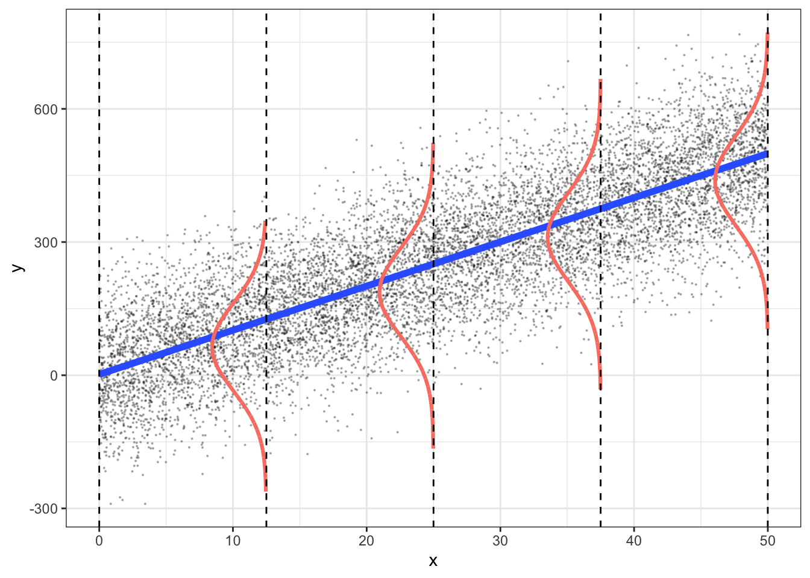
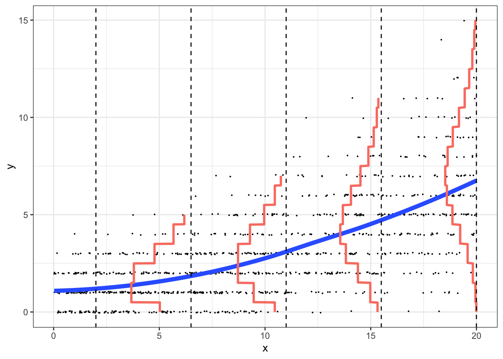
Figure 1 illustrates a comparison of the LLSR model for inference to Poisson regression using a log function of \(\lambda\).
- The graphic displaying the LLSR inferential model appears in the left panel of Figure 1. It shows that, for each level of X, the responses are approximately normal. The panel on the right side of Figure 1 depicts what a Poisson regression model looks like. For each level of X, the responses follow a Poisson distribution (Assumption 1). For Poisson regression, small values of \(\lambda\) are associated with a distribution that is noticeably skewed with lots of small values and only a few larger ones. As \(\lambda\) increases the distribution of the responses begins to look more and more like a normal distribution.
- In the LLSR model, the variation in \(Y\) at each level of X, \(\sigma^2\), is the same. For Poisson regression the responses at each level of X become more variable with increasing means, where variance=mean (Assumption 3).
- In the case of LLSR, the mean responses for each level of X, \(\mu_{Y|X}\), fall on a line. In the case of the Poisson model, the mean values of \(Y\) at each level of \(X\), \(\lambda_{Y|X}\), fall on a curve, not a line, although the logs of the means should follow a line (Assumption 4).
Case Studies Overview
We take a look at the Poisson regression model in the context of four case studies. Each case study is based on real data and real questions. Modeling household size in the Philippines introduces the idea of regression with a Poisson response along with checking assumptions and interpreting estimated model coefficient. A quadratic term is added to a model to determine an optimal size per household, methods of model comparison are introduced, and we see how to account for overdispersion, when actual variability exceeds what is expected by the model. The bald eagles case study introduces the idea of offsets to account for sampling effort. Finally, we consider two case studies in which new models are needed to better account for the number of zeros: the weekend drinking example uses a zero-inflated Poisson (ZIP) model, while the ambiguity in Congressional candidate statements case study uses a hurdle model. These four case studies also provide context for some of the familiar concepts related to modeling such as exploratory data analysis (EDA), estimation, and residual plots.
Case Study: Household Size in the Philippines
How many other people live with you in your home? The number of people sharing a house differs from country to country and often from region to region. International agencies use household size when determining needs of populations, and the household sizes determine the magnitude of the household needs.
The Philippine Statistics Authority (PSA) spearheads the Family Income and Expenditure Survey (FIES) nationwide. The survey, which is undertaken every three years, is aimed at providing data on family income and expenditure, including levels of consumption by item of expenditure. Our data, from the 2015 FIES, is a subset of 1500 of the 40,000 observations [@PSA]. Our data set focuses on five regions: Central Luzon, Metro Manila, Ilocos, Davao, and Visayas (see Figure 2).
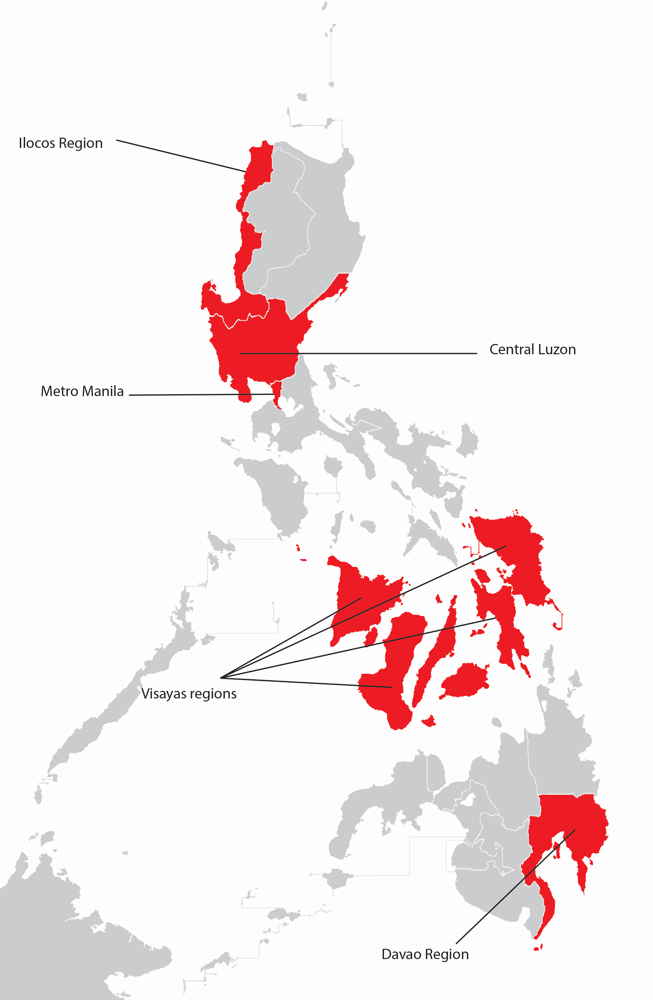
At what age are heads of households in the Philippines most likely to find the largest number of people in their household? Is this association similar for poorer households (measured by the presence of a roof made from predominantly light/salvaged materials)? We begin by explicitly defining our response, \(Y=\) number of household members other than the head of the household. We then define the explanatory variables: age of the head of the household, type of roof (predominantly light/salvaged material or predominantly strong material), and location (Central Luzon, Davao Region, Ilocos Region, Metro Manila, or Visayas). Note that predominantly light/salvaged materials are a combination of light material, mixed but predominantly light material, and mixed but predominantly salvaged material, and salvaged matrial. Our response is a count, so we consider a Poisson regression where the parameter of interest is \(\lambda\), the average number of people, other than the head, per household. We will primarily examine the relationship between household size and age of the head of household, controlling for location and income.
Data Organization
The first five rows from our data set phillipines.csv are illustrated in Table 1. Each line of the data file refers to a household at the time of the survey:
location= where the house is located (Central Luzon, Davao Region, Ilocos Region, Metro Manila, or Visayas)age= the age of the head of householdtotal= the number of people in the household other than the headnumLT5= the number in the household under 5 years of ageroof= the type of roof in the household (either Predominantly Light/Salvaged Material, or Predominantly Strong Material, where stronger material can sometimes be used as a proxy for greater wealth)
| …1 | location | age | total | numLT5 | roof |
|---|---|---|---|---|---|
| 1 | CentralLuzon | 65 | 0 | 0 | Predominantly Strong Material |
| 2 | MetroManila | 75 | 3 | 0 | Predominantly Strong Material |
| 3 | DavaoRegion | 54 | 4 | 0 | Predominantly Strong Material |
| 4 | Visayas | 49 | 3 | 0 | Predominantly Strong Material |
| 5 | MetroManila | 74 | 3 | 0 | Predominantly Strong Material |
Exploratory Data Analyses
For the rest of this case study, we will refer to the number of people in a household as the total number of people in that specific household besides the head of household. The average number of people in a household is 3.68 (Var = 5.53), and there are anywhere from 0 to 16 people in the houses. Figure 3 reveals a fair amount of variability in the number in each house; responses range from 0 to 16 with many of the respondents reporting between 1 and 5 people in the house. Like many Poisson distributions, this graph is right skewed. It clearly does not suggest that the number of people in a household is a normally distributed response.
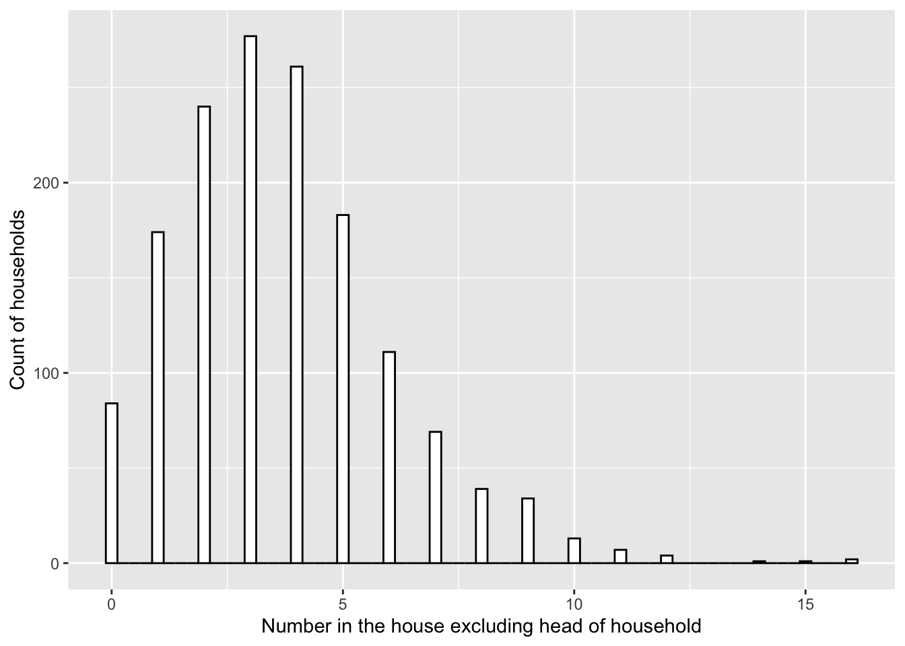
In terms of potential explanatory variables for household size, we see that over 11.1% of these households are made from predominantly light and salvaged material. The mean number of people in a house for houses with a roof made from predominantly strong material is 3.69 (Var=5.55), whereas houses with a roof made from predominantly light/salvaged material average 3.64 people (Var=5.41). Out of five regions, Visayas has the largest household size, on average, with a mean of 3.90 in the household, and the Davao Region has the smallest with a mean of 3.39. In Figure 4, we see that the Visayas region has the highest concentration of household with 7 or more members, while the Davao region and Central Luzon have the highest concentrations of households with 3-4 members.
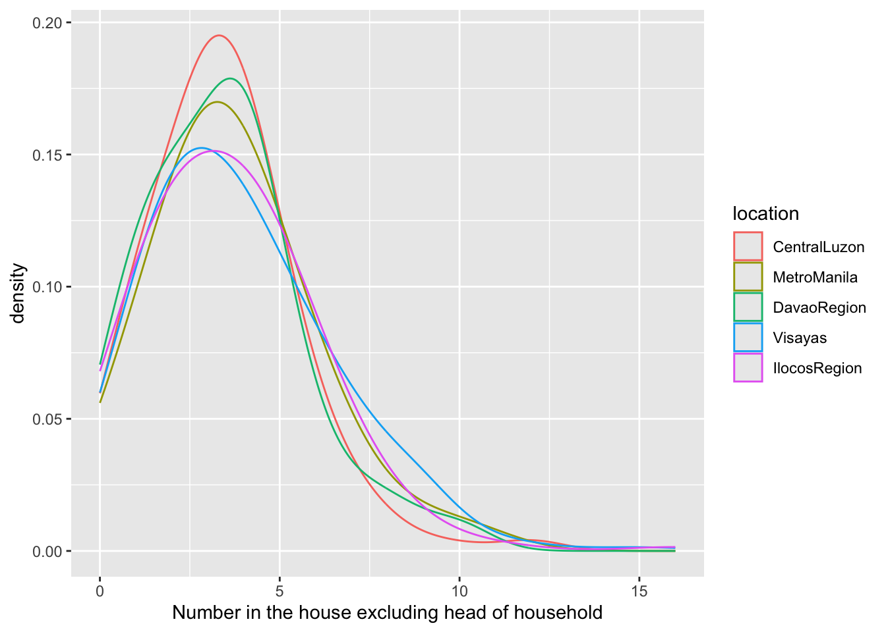
Figure 5 further shows that responses can be reasonably modeled with a Poisson distribution when grouped by a key explanatory variable: age of the household head. These last two plots together suggest that Assumption 1 (Poisson Response) is satisfactory in this case study.
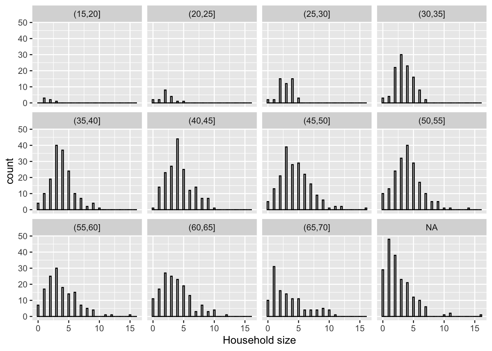
For Poisson random variables, the variance of \(Y\) (i.e., the square of the standard deviation of \(Y\)), is equal to its mean, where \(Y\) represents the size of an individual household. As the mean increases, the variance increases. So, if the response is a count and the mean and variance are approximately equal for each group of \(X\), a Poisson regression model may be a good choice. In Table 2 we display age groups by 5-year increments to check to see if the empirical means and variances of the number in the house are approximately equal for each age group. This provides us one way in which to check the Poisson Assumption 3 (mean = variance).
| Age Groups | Mean | Variance | n |
|---|---|---|---|
| (15,20] | 1.666667 | 0.6666667 | 6 |
| (20,25] | 2.166667 | 1.5588235 | 18 |
| (25,30] | 2.918367 | 1.4098639 | 49 |
| (30,35] | 3.444444 | 2.1931464 | 108 |
| (35,40] | 3.841772 | 3.5735306 | 158 |
| (40,45] | 4.234286 | 4.4447947 | 175 |
| (45,50] | 4.489691 | 6.3962662 | 194 |
| (50,55] | 4.010638 | 5.2512231 | 188 |
| (55,60] | 3.806897 | 6.5318966 | 145 |
| (60,65] | 3.705882 | 6.1958204 | 153 |
| (65,70] | 3.339130 | 7.9980168 | 115 |
| NA | 2.549738 | 5.5435657 | 191 |
If there is a problem with this assumption, most often we see variances much larger than means. Here, as expected, we see more variability as age increases. However, it appears that the variance is smaller than the mean for lower ages, while the variance is greater than the mean for higher ages. Thus, there is some evidence of a violation of the mean=variance assumption (Assumption 3), although any violations are modest.
The Poisson regression model also implies that log(\(\lambda_i\)), not the mean household size \(\lambda_i\), is a linear function of age; i.e., \(log(\lambda_i)=\beta_0+\beta_1\textrm{age}_i\). Therefore, to check the linearity assumption (Assumption 4) for Poisson regression, we would like to plot log(\(\lambda_i\)) by age. Unfortunately, \(\lambda_i\) is unknown. Our best guess of \(\lambda_i\) is the observed mean number in the household for each age (level of \(X\)). Because these means are computed for observed data, they are referred to as empirical means. Taking the logs of the empirical means and plotting by age provides a way to assess the linearity assumption. The smoothed curve added to Figure 6 suggests that there is a curvilinear relationship between age and the log of the mean household size, implying that adding a quadratic term should be considered. If the model \(log(\lambda_i)=\beta_0+\beta_1\textrm{age}_i\) were adequate, we would see a linear trend in Figure 6. This finding is consistent with the researchers’ hypothesis that there is an age at which a maximum household size occurs. It is worth noting that we are not modeling the log of the empirical means, rather it is the log of the true rate that is modeled. Looking at empirical means, however, does provide an idea of the form of the relationship between log(\(\lambda)\) and \(x_i\).
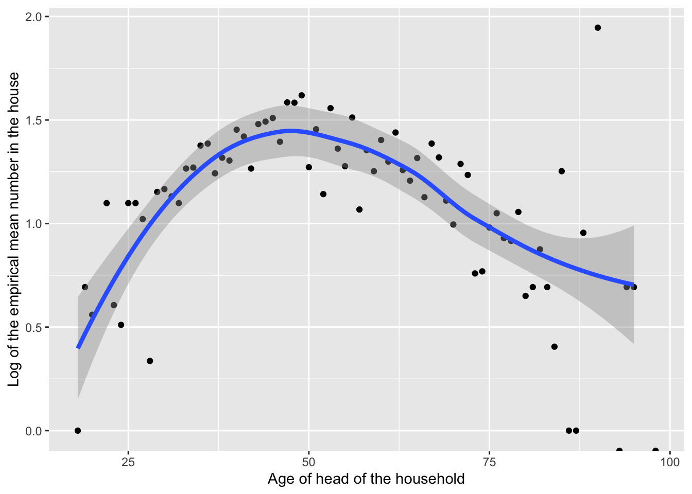
We can extend Figure 6 by fitting separate curves for each region (see Figure 7). This allows us to see if the relationship between mean household size and age is consistent across region. In this case, the relationships are pretty similar; if they weren’t, we could consider adding an age-by-region interaction to our eventual Poisson regression model.
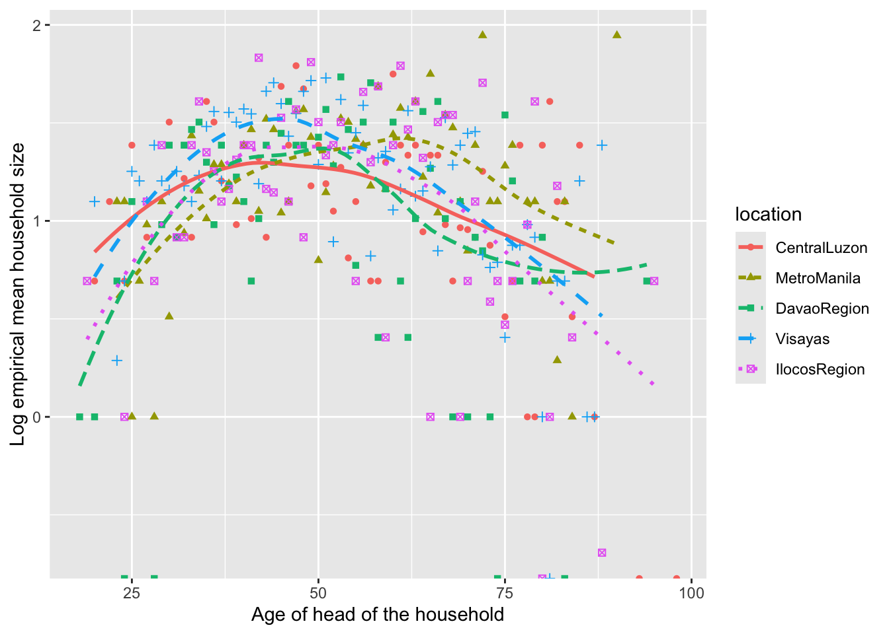
Finally, the independence assumption (Assumption 2) can be assessed using knowledge of the study design and the data collection process. In this case, we do not have enough information to assess the independence assumption with the information we are given. If each household was not selected individually in a random manner, but rather groups of households were selected from different regions with differing customs about living arrangements, the independence assumption would be violated. If this were the case, we could use a multilevel model like those discussed in later chapters with a village term.
Estimation and Inference
Coefficient Interpretation
We first consider a model for which log(\(\lambda\)) is linear in age. We then will determine whether a model with a quadratic term in age provides a significant improvement based on trends we observed in the exploratory data analysis.
R reports an estimated regression equation for the linear Poisson model as:
\[\begin{equation*} log(\hat{\lambda}) = 1.55 - 0.0047 \textrm{age} \end{equation*}\]
modela <- glm(total ~ age, family = poisson, data = fHH1)## Estimate Std. Error z value Pr(>|z|)
## (Intercept) 1.549942225 0.0502754106 30.829032 1.070156e-208
## age -0.004705881 0.0009363388 -5.025832 5.012548e-07## Residual deviance = 2337.089 on 1498 df
## Dispersion parameter = 1How can the coefficient estimates be interpreted in terms of this example? As done when interpreting slopes in the LLSR models, we consider how the estimated mean number in the house, \(\lambda\), changes as the age of the household head increases by an additional year. But in place of looking at change in the mean number in the house, with a Poisson regression we consider the log of the mean number in the house and then convert back to original units. For example, consider a comparison of two models—one for a given age (\(x\)) and one after increasing age by 1 (\(x+1\)):
\[ \begin{aligned} log(\lambda_X) &= \beta_0 + \beta_1X \\ log(\lambda_{X+1}) &= \beta_0 + \beta_1(X+1) \\ log(\lambda_{X+1})-log(\lambda_X) &= \beta_1 \\ log \left(\frac{\lambda_{X+1}}{\lambda_X}\right) &= \beta_1\\ \frac{\lambda_{X+1}}{\lambda_X} &= e^{\beta_1} \end{aligned} \tag{1}\]
These results suggest that by exponentiating the coefficient on age we obtain the multiplicative factor by which the mean count changes. In this case, the mean number in the house changes by a factor of \(e^{-0.0047}=0.995\) or decreases by 0.5% (since \(1-.995 = .005\)) with each additional year older the household head is; or, we predict a 0.47% increase in mean household size for a 1-year decrease in age of the household head (since \(1/.995=1.0047\)). The quantity on the left-hand side of Equation 1 is referred to as a rate ratio or relative risk, and it represents a percent change in the response for a unit change in X. In fact, for regression models in general, whenever a variable (response or explanatory) is logged, we make interpretations about multiplicative effects on that variable, while with unlogged variables we can reach our usual interpretations about additive effects.
Confidence Intervals
Typically, the standard errors for the estimated coefficients are included in Poisson regression output. Here the standard error for the estimated coefficient for age is 0.00094; we can use the standard error to construct a confidence interval for \(\beta_1\). A Wald-type (normal theory) 95% confidence interval (CI) provides a range of plausible values for the age coefficient and can be constructed:
\[ (\hat\beta_1-Z^*\cdot SE(\hat\beta_1), \quad \hat\beta_1+Z^*\cdot SE(\hat\beta_1)) \]
\[ (-0.0047-1.96*0.00094, \quad -0.0047+1.96*0.00094) \]
\[ (-0.0065, -0.0029). \]
Exponentiating the endpoints yields a confidence interval for the relative risk; i.e., the percent change in household size for each additional year older. Thus \((e^{-0.0065},e^{-0.0029})=(0.993,0.997)\) suggests that we are 95% confident that the mean number in the house decreases between 0.7% (\((1 - .993) \times 100\%\)) and 0.3% (\((1 - .997) \times 100\%\)) for each additional year older the head of household is. It is best to construct a confidence interval for the coefficient and then exponentiate the endpoints because the estimated coefficients more closely follow a normal distribution than the exponentiated coefficients. There are other approaches to constructing intervals in these circumstances, including profile likelihood, the delta method, and bootstrapping, and we will discuss some of those approaches later. In this case, for instance, the profile likelihood interval is nearly identical to the Wald-type confidence interval above.
Profile likelihood intervals
The profile likelihood function of a model parameter is obtained by finding the maximum log-likelihood for each fixed value of the parameter of interest across all possible values of other model parameters. Profile likelihood confidence intervals are then based on the asymptotic chi-square distribution of the log likelihood ratio test statistic, rather than the asymptotic normal distribution of the maximum likelihood estimator (MLE) as with Wald-type (normal theory) methods. As a result, profile likelihood methods tend to perform better than Wald-type methods with sparse data or likelihoods that are not symmetric around the MLE.
# CI for betas using profile likelihood
confint(modela)## 2.5 % 97.5 %
## (Intercept) 1.451170100 1.648249185
## age -0.006543163 -0.002872717exp(confint(modela))## 2.5 % 97.5 %
## (Intercept) 4.2681057 5.1978713
## age 0.9934782 0.9971314Significance Testing
If there is no association between age and household size, there is no change in household size for each additional year, so \(\lambda_X\) is equal to \(\lambda_{X+1}\) and the ratio \(\lambda_{X+1}/\lambda_X\) is 1. In other words, if there is no association between age and household size, then \(\beta_1=0\) and \(e^{\beta_1}=1\). Note that our interval for \(e^{\beta_1}\), (0.993,0.997), does not include 1, so the model with age is preferred to a model without age; i.e., age is significantly associated with household size. Note that we could have similarly confirmed that our confidence interval for \(\beta_1\) does not include 0 to show the significance of age as a predictor of household size.
Wald-type Test
Another way to test the significance of the age term is to calculate a Wald-type statistic. A Wald-type test statistic is the estimated coefficient divided by its standard error. When the true coefficient is 0, this test statistic follows a standard normal distribution for sufficiently large \(n\). The estimated coefficient associated with the linear term in age is \({\hat{\beta}_1}=-0.0047\) with standard error \(SE(\hat{\beta}_1)=0.00094\). The value for the Wald test statistic is then \(Z=\hat{\beta}_1/SE(\hat{\beta}_1)=-5.026\), where \(Z\) follows a standard normal distribution if \(\beta_1=0\). In this case, the two-sided p-value based on the standard normal distribution for testing \(H_0:\beta_1=0\) is almost 0 (\(p=0.000000501\)). Therefore, we have statistically significant evidence (Z = -5.026, p < .001) that average household size decreases as age of the head of household increases.
Using Deviances to Compare Models
There is another way in which to assess how useful age is in our model. A deviance is a way in which to measure how the observed data deviates from the model predictions; it will be defined more precisely in Section 1.7.4, but it is similar to sum of squared errors (unexplained variability in the response) in LLSR regression. Because we want models that minimize deviance, we calculate the drop-in-deviance when adding age to the model with no covariates (the null model). The deviances for the null model and the model with age can be found in the model output. A residual deviance for the model with age is reported as 2337.1 with 1498 df. The output also includes the deviance and degrees of freedom for the null model (2362.5 with 1499 df). The drop-in-deviance is 25.4 (2362.5 - 2337.1) with a difference of only 1 df, so that the addition of one extra term (age) reduced unexplained variability by 25.4. If the null model were true, we would expect the drop-in-deviance to follow a \(\chi^2\) distribution with 1 df. Therefore, the p-value for comparing the null model to the model with age is found by determining the probability that the value for a \(\chi^2\) random variable with one degree of freedom exceeds 25.4, which is essentially 0. Once again, we can conclude that we have statistically significant evidence (\(\chi^2_{\text{df} =1}=25.4\), \(p < .001\)) that average household size decreases as age of the head of household increases.
# model0 is the null/reduced model
model0 <- glm(total ~ 1, family = poisson, data = fHH1)
drop_in_dev <- anova(model0, modela, test = "Chisq")## ResidDF ResidDev Deviance Df pval
## 1 1499 2362.488 NA NA NA
## 2 1498 2337.089 25.39907 1 4.661424e-07More formally, we are testing:
\[\textrm{Null (reduced) Model}: \log(\lambda) = \beta_0 \textrm{ or } \beta_1=0\] \[\textrm{Larger (full) Model}: \log(\lambda) = \beta_0 + \beta_1\textrm{age} \textrm{ or } \beta_1 \neq 0 \]
In order to use the drop-in-deviance test, the models being compared must be nested; e.g., all the terms in the smaller model must appear in the larger model. Here the smaller model is the null model with the single term \(\beta_0\) and the larger model has \(\beta_0\) and \(\beta_1\), so the two models are indeed nested. For nested models, we can compare the models’ residual deviances to determine whether the larger model provides a significant improvement.
Summary
Here, then, is a summary of these two approaches to hypothesis testing about terms in Poisson regression models:
Drop-in-deviance test to compare models
- Compute the deviance for each model, then calculate: drop-in-deviance = residual deviance for reduced model – residual deviance for the larger model.
- When the reduced model is true, the drop-in-deviance \(\sim \chi^2_d\) where d= the difference in the degrees of freedom associated with the two models (that is, the difference in the number of terms/coefficients).
- A large drop-in-deviance favors the larger model.
Wald test for a single coefficient
- Wald-type statistic = estimated coefficient / standard error
- When the true coefficient is 0, for sufficiently large \(n\), the test statistic \(\sim\) N(0,1).
- If the magnitude of the test statistic is large, there is evidence that the true coefficient is not 0.
The drop-in-deviance and the Wald-type tests usually provide consistent results; however, if there is a discrepancy, the drop-in-deviance is preferred. Not only does the drop-in-deviance test perform better in more cases, but it’s also more flexible. If two models differ by one term, then the drop-in-deviance test essentially tests if a single coefficient is 0 like the Wald test does, while if two models differ by more than one term, the Wald test is no longer appropriate. And if one model is not nested in the other, we can compare measures of model performance such as AIC and BIC (see Chapter 2: Beyond Least Squares), although no formal significance test is available.
Using Likelihoods to Fit Models (optional)
Before continuing with model building, we take a short detour to see how coefficient estimates are determined in a Poisson regression model. The least squares approach requires a linear relationship between the parameter, \(\lambda_i\) (the expected or mean response for observation \(i\)), and \(x_i\) (the age for observation \(i\)). However, it is log\((\lambda_i)\), not \(\lambda_i\), that is linearly related to X with the Poisson model. The assumptions of equal variance and normality also do not hold for Poisson regression. Thus, the method of least squares will not be helpful for inference in Poisson regression. Instead of least squares, we employ the likelihood principle to find estimates of our model coefficients, as in Chapter 2: Beyond Least Squares. We look for those coefficient estimates for which the likelihood of our data is maximized; these are the maximum likelihood estimates.
The likelihood for n independent observations is the product of the probabilities. For example, if we observe five households with household sizes of 4, 2, 8, 6, and 1 person beyond the head, the likelihood is:
\[ Likelihood = P(Y_1=4)*P(Y_2=2)*P(Y_3=8)*P(Y_4=6)*P(Y_5=1)\] Recall that the probability of a Poisson response can be written
\[P(Y=y)=\frac{e^{-\lambda}\lambda^y}{y!}\] for \(y = 0, 1, 2, ...\) So, the likelihood can be written as
\[\begin{align*} Likelihood&= \frac{ e^{-\lambda_1}\lambda_1^4 }{ 4! }* \frac{ e^{-\lambda_2}\lambda_2^2 }{ 2! } *\frac{e^{-\lambda_3}\lambda_3^8}{8!}* \frac{e^{-\lambda_4}\lambda_4^6}{6!}*\frac{e^{-\lambda_5}\lambda_5^1}{1!} \end{align*}\] where each \(\lambda_i\) can differ for each household depending on a particular \(x_i\). As in [Chapter 2: Beyond Least Squares], it will be easier to find a maximum if we take the log of the likelihood and ignore the constant term resulting from the sum of the factorials:
\[ \begin{aligned} -logL& \propto \lambda_{1}-4log(\lambda_{1})+\lambda_{2}-2log(\lambda_{2}) \nonumber \\ & +\lambda_{3}-8log(\lambda_{3})+\lambda_{4}-6log(\lambda_{4}) \nonumber \\ & +\lambda_{5}-log(\lambda_{5}) \end{aligned} \tag{2}\]
Now if we had the age of the head of the household for each house (\(x_i\)), we consider the Poisson regression model:
\[log(\lambda_i)=\beta_0+\beta_1x_i \]
This implies that \(\lambda\) differs for each age and can be determined using
\[\lambda_i=e^{\beta_0+\beta_1x_i.}\]
If the ages are 32, 21, 55, 44, and 28 years, respecively, our log-likelihood can be written:
\[ \begin{aligned} logL \propto & [-e^{\beta_0+\beta_132}+4({\beta_0+\beta_132})]+ [-e^{\beta_0+\beta_121}+2({\beta_0+\beta_121})]+ \nonumber \\ & [-e^{\beta_0+\beta_155}+8({\beta_0+\beta_155})]+ [-e^{\beta_0+\beta_144}+6({\beta_0+\beta_144})]+ \nonumber \\ & [-e^{\beta_0+\beta_128}+({\beta_0+\beta_128})] \end{aligned} \tag{3}\]
To see this, match the terms in Equation 2 with those in Equation 3, noting that \(\lambda_i\) has been replaced with \(e^{\beta_0+\beta_1x_i}\). It is Equation 3 that will be used to estimate the coefficients \(\beta_0\) and \(\beta_1\). Although this looks a little more complicated than the log-likelihoods we saw in [Chapter 2: Beyond Least Squares], the fundamental ideas are the same. In theory, we try out different possible values of \(\beta_0\) and \(\beta_1\) until we find the two for which the log-likelihood is largest. Most statistical software packages have automated search algorithms to find those values for \(\beta_0\) and \(\beta_1\) that maximize the log-likelihood.
Linear Least Squares vs. Poisson Regression
\[\begin{gather*} \underline{\textrm{Response}} \\ \mathbf{LLSR:}\textrm{ Normal} \\ \mathbf{Poisson Regression:}\textrm{ Counts} \\ \textrm{ } \\ \underline{\textrm{Variance}} \\ \mathbf{LLSR:}\textrm{ Equal for each level of X} \\ \mathbf{Poisson Regression:}\textrm{ Equal to the mean for each level of X} \\ \textrm{ } \\ \underline{\textrm{Model Fitting}} \\ \mathbf{LLSR:}\ \mu=\beta_0+\beta_1x \textrm{ using Least Squares}\\ \mathbf{Poisson Regression:}\ log(\lambda)=\beta_0+\beta_1x \textrm{ using Maximum Likelihood}\\ \end{gather*}\]
\[\begin{gather*} \underline{\textrm{EDA}} \\ \mathbf{LLSR:}\textrm{ Plot X vs. Y; add line} \\ \mathbf{Poisson Regression:}\textrm{ Find }log(\bar{y})\textrm{ for several subgroups; plot vs. X} \\ \textrm{ } \\ \underline{\textrm{Comparing Models}} \\ \mathbf{LLSR:}\textrm{ Extra sum of squares F-tests; AIC/BIC} \\ \mathbf{Poisson Regression:}\textrm{ Drop in Deviance tests; AIC/BIC} \\ \textrm{ } \\ \underline{\textrm{Interpreting Coefficients}} \\ \mathbf{LLSR:}\ \beta_1=\textrm{ change in }\mu_y\textrm{ for unit change in X} \\ \mathbf{Poisson Regression:}\ e^{\beta_1}=\textrm{ percent change in }\lambda\textrm{ for unit change in X} \end{gather*}\]
Model Building
Second Order Model
In Section 1.5.3.2, the Wald-type test and drop-in-deviance test both suggest that a linear term in age is useful. But our exploratory data analysis in Section 1.4.2 suggests that a quadratic model might be more appropriate. A quadratic model would allow us to see if there exists an age where the number in the house is, on average, a maximum. The output for a quadratic model appears below.
fHH1 <- fHH1 |> mutate(age2 = age*age)
modela2 <- glm(total ~ age + age2,
family = poisson,
data = fHH1)## Estimate Std. Error z value Pr(>|z|)
## (Intercept) -0.3325296333 1.788357e-01 -1.859414 6.296847e-02
## age 0.0708867627 6.890442e-03 10.287694 8.007069e-25
## age2 -0.0007083289 6.405674e-05 -11.057834 2.008898e-28## Residual deviance = 2200.944 on 1497 df
## Dispersion parameter = 1We can assess the importance of the quadratic term in two ways. First, the p-value for the Wald-type statistic for age\(^2\) is statistically significant (Z = -11.058, p < 0.001). Another approach is to perform a drop-in-deviance test.
drop_in_dev <- anova(modela, modela2, test = "Chisq")## ResidDF ResidDev Deviance Df pval
## 1 1498 2337.089 NA NA NA
## 2 1497 2200.944 136.1454 1 1.854452e-31\(H_0:\) log(\(\lambda\))=\(\beta_0+\beta_1 \textrm{age}\) (reduced model)
\(H_A:\) log(\(\lambda\))=\(\beta_0+\beta_1 \textrm{age} + \beta_2 \textrm{age}^2\) (larger model)
The first order model has a residual deviance of 2337.1 with 1498 df and the second order model, the quadratic model, has a residual deviance of 2200.9 with 1497 df. The drop-in-deviance by adding the quadratic term to the linear model is 2337.1 - 2200.9 = 136.2 which can be compared to a \(\chi^2\) distribution with one degree of freedom. The p-value is essentially 0, so the observed drop of 136.2 again provides significant support for including the quadratic term.
We now have an equation in age which yields the estimated log(mean number in the house).
\[\textrm{log(mean numHouse)} = -0.333 + 0.071 \textrm{age} - 0.00071 \textrm{age}^2\]
As shown in the following, with calculus we can determine that the maximum estimated additional number in the house is \(e^{1.441} = 4.225\) (on average) when the head of the household is 50.04 years old.
\[\begin{align*} \textrm{log(total)} & = -0.333 + 0.071\textrm{age} - 0.00071 \textrm{age}^2 \\ \frac{d}{d\textrm{age}}\textrm{log(total)} & = 0 + 0.071 - 0.0014 \textrm{age} = 0 \\ \textrm{age} & = 50.04 \\ \textrm{max[log(total)]} & = -0.333 + 0.071 \times 50.04 - 0.00071 \times (50.04)^2 = 1.441 \end{align*}\]
Adding Covariates
We should consider other covariates that may be related to household size. By controlling for important covariates, we can obtain more precise estimates of the relationship between age and household size. In addition, we may discover that the relationship between age and household size differs by levels of a covariate. One important covariate to consider is location. As described earlier in the case study, there are 5 different regions that are associated with the Location variable: Central Luzon, Metro Manila, Visayas, Davao Region, and Ilocos Region. Assessing the utility of including the covariate Location is, in essence, comparing two nested models; here the quadratic model is compared to the quadratic model plus terms for Location. Results from the fitted model appears below; note that Central Luzon is the reference region that all other regions are compared to since it comes first alphabetically.
modela2L <- glm(total ~ age + age2 + location,
family = poisson,
data = fHH1)## Estimate Std. Error z value Pr(>|z|)
## (Intercept) -0.3843337714 1.820919e-01 -2.1106581 3.480171e-02
## age 0.0703628330 6.905067e-03 10.1900292 2.196983e-24
## age2 -0.0007025856 6.420019e-05 -10.9436677 7.125764e-28
## locationMetroManila 0.0544800704 4.720116e-02 1.1542104 2.484139e-01
## locationDavaoRegion -0.0193872310 5.378273e-02 -0.3604732 7.184933e-01
## locationVisayas 0.1121091959 4.174960e-02 2.6852758 7.246998e-03
## locationIlocosRegion 0.0609819668 5.265981e-02 1.1580362 2.468493e-01## Residual deviance = 2187.8 on 1493 df
## Dispersion parameter = 1Our Poisson regression model now looks like:
\[\begin{align*} \textrm{log(total)} = & -0.384 + 0.070 \cdot \textrm{age} - 0.00070 \cdot \textrm{age}^2 +0.061 \cdot \textrm{IlocosRegion} + \\ & 0.054 \cdot\textrm{MetroManila} +0.112 \cdot\textrm{Visayas} - 0.019 \cdot \textrm{DavaoRegion} \end{align*}\] Notice that because there are 5 different locations, we must represent the effects of different locations through 4 indicator variables. For example, \(\hat{\beta}_6=-0.0194\) indicates that, after controlling for the age of the head of household, the log mean household size is 0.0194 lower for households in the Davao Region than for households in the reference location of Central Luzon. In more interpretable terms, mean household size is \(e^{-0.0194}=0.98\) times “higher” (i.e., 2% lower) in the Davao Region than in Central Luzon, when holding age constant. Notice also that the coefficients for \(\textrm{age}\) and \(\textrm{age}^2\) are essentially unchanged from our model without location in Section 1.7.1, so that the maximum estimated additional number in the house is still when the head of the household is around 50 years old, even after adjusting for location.
drop_in_dev <- anova(modela2, modela2L, test = "Chisq")## ResidDF ResidDev Deviance Df pval
## 1 1497 2200.944 NA NA NA
## 2 1493 2187.800 13.14369 4 0.01059463To test if the mean household size significantly differs by location, we must use a drop-in-deviance test, rather than a Wald-type test, because four terms (instead of just one) are added when including the location variable. From the Analysis of Deviance table above, adding the four terms corresponding to location to the quadratic model with age produces a statistically significant improvement \((\chi^2=13.144, df = 4, p=0.0106)\), so there is significant evidence that mean household size differs by location, after controlling for age of the head of household. Further modeling (not shown) shows that after controlling for location and age of the head of household, mean household size did not differ between the two types of roofing material.
Tukey’s Honestly Significant Differences
Comparisons to regions other than the Central Luzon can be accomplished by changing the reference region. If many comparisons are made, it would be best to adjust for multiple comparisons using a method such as Tukey’s Honestly Significant Differences (HSD), which considers all pairwise comparisons among regions. This method helps control the large number of false positives that we would see if we ran multiple t-tests comparing groups. The honestly significant difference compares a standardized mean difference between two groups to a critical value from a studentized range distribution.
mult_comp <- summary(glht(modela2L, mcp(location = "Tukey")))# A tibble: 10 × 5
comparison estimate SE z_value p_value
<chr> <dbl> <dbl> <dbl> <dbl>
1 MetroManila - CentralLuzon 0.0545 0.0472 1.15 0.772
2 DavaoRegion - CentralLuzon -0.0194 0.0538 -0.360 0.996
3 Visayas - CentralLuzon 0.112 0.0417 2.69 0.0542
4 IlocosRegion - CentralLuzon 0.0610 0.0527 1.16 0.770
5 DavaoRegion - MetroManila -0.0739 0.0499 -1.48 0.567
6 Visayas - MetroManila 0.0576 0.0365 1.58 0.504
7 IlocosRegion - MetroManila 0.00650 0.0487 0.133 1.00
8 Visayas - DavaoRegion 0.131 0.0448 2.94 0.0266
9 IlocosRegion - DavaoRegion 0.0804 0.0551 1.46 0.582
10 IlocosRegion - Visayas -0.0511 0.0435 -1.18 0.760 In our case, Tukey’s Honestly Significant Differences simultaneously evaluates all 10 mean differences between pairs of regions. We find that the only statistically significant difference between regions is that Visayas has a higher mean household size than the Davao Region (\(Z = 2.94\) with adjusted \(p = .0266\)), although the difference between Visayas and Central Luzon is marginally significant (\(Z = 2.69\) with adjusted \(p = .0542\)). Mean household size is \(e^{0.131} = 14.0\%\) higher in Visayas than in the Davao Region, after controlling for the age of the household head. Based on our HSD analysis, we will later consider modeling location as simply an indicator variable for the Visayas region vs. all others combined.
Residuals for Poisson Models (optional)
Residual plots may provide some insight into Poisson regression models, especially linearity and outliers, although the plots are not quite as useful here as they are for linear least squares regression. There are a few options for computing residuals and predicted values. Residuals may have the form of residuals for LLSR models or the form of deviance residuals which, when squared, sum to the total deviance for the model. Predicted values can be estimates of the counts, \(e^{\beta_0+\beta_1X}\), or log counts, \(\beta_0+\beta_1X\). We will typically use the deviance residuals and predicted counts.
The residuals for linear least squares regression have the form:
\[ \begin{aligned} \textrm{LLSR residual}_i &= \textrm{obs}_i - \textrm{fit}_i \nonumber \\ &={Y_i-\hat{\mu}_i} \nonumber \\ &= Y_i-(\hat{\beta}_0 +\hat{\beta}_1 X_i) \end{aligned} \tag{4}\]
Residual sum of squares (RSS) are formed by squaring and adding these residuals, and we generally seek to minimize RSS in model building. We have several options for creating residuals for Poisson regression models. One is to create residuals in much the same way as we do in LLSR. For Poisson residuals, the predicted values are denoted by \(\hat{\lambda}_i\) (in place of \(\hat{\mu}_i\) in Equation 4); they are then standardized by dividing by the standard error, \(\sqrt{\hat{\lambda}_i}\). These kinds of residuals are referred to as Pearson residuals.
\[\begin{equation*} \textrm{Pearson residual}_i = \frac{Y_i-\hat{\lambda}_i}{\sqrt{\hat{\lambda}_i}} \end{equation*}\]
Pearson residuals have the advantage that you are probably familiar with their meaning and the kinds of values you would expect. For example, after standardizing we expect most Pearson residuals to fall between -2 and 2. However, deviance residuals have some useful properties that make them a better choice for Poisson regression.
First, we define a deviance residual for an observation from a Poisson regression:
\[\begin{equation*} \textrm{deviance residual}_i = \textrm{sign}(Y_i-\hat{\lambda}_i) \sqrt{ 2 \left[Y_i log\left(\frac{Y_i}{\hat{\lambda}_i}\right) -(Y_i - \hat{\lambda}_i) \right]} \end{equation*}\] where \(\textrm{sign}(x)\) is defined such that:
\[ \textrm{sign}(x) = \begin{cases} 1 & \textrm{if }\ x > 0 \\ -1 & \textrm{if }\ x < 0 \\ 0 & \textrm{if }\ x = 0\end{cases}\]
As its name implies, a deviance residual describes how the observed data deviates from the fitted model. Squaring and summing the deviances for all observations produces the residual deviance \(=\sum (\textrm{deviance residual})^2_i\). Relatively speaking, observations for good fitting models will have small deviances; that is, the predicted values will deviate little from the observed. However, you can see that the deviance for an observation does not easily translate to a difference in observed and predicted responses as is the case with LLSR models.
Unfortunate names
If you are slightly amazed and confused that statisticians would use the term “residual deviance” for the sum of a bunch of “deviance residuals”, we share your exasperation! Who does that?! But since those are the most likely terms you’ll see for those two ideas, we will continue to use those confusing monikers.
A careful inspection of the deviance formula reveals several places where the deviance compares \(Y\) to \(\hat{\lambda}\): the sign of the deviance is based on the difference between \(Y\) and \(\hat{\lambda}\), and under the radical sign we see the ratio \(Y/\hat{\lambda}\) and the difference \(Y -\hat{\lambda}\). When \(Y = \hat{\lambda}\), that is, when the model fits perfectly, the difference will be 0 and the ratio will be 1 (so that its log will be 0). So like the residuals in LLSR, an observation that fits perfectly will not contribute to the sum of the squared deviances. This definition of a deviance depends on the likelihood for Poisson models. Other models will have different forms for the deviance depending on their likelihood.
Warning: Using `size` aesthetic for lines was deprecated in ggplot2 3.4.0.
ℹ Please use `linewidth` instead.
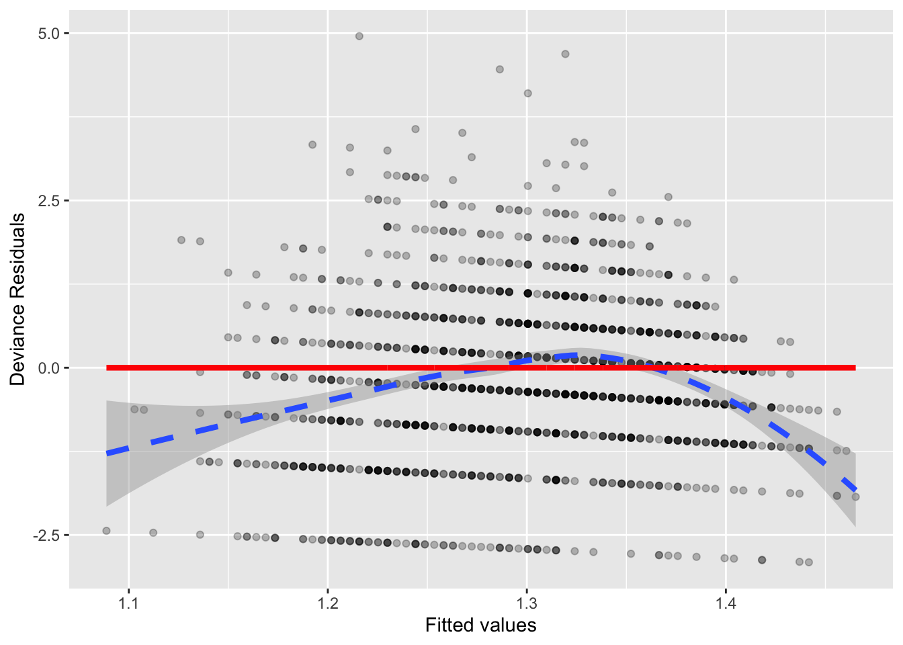
A plot (Figure 8) of the deviance residuals versus predicted responses for the first order model exhibits curvature, supporting the idea that the model may improved by adding a quadratic term. Other details related to residual plots can be found in a variety of sources including @McCullagh1989.
Goodness-of-Fit
The model residual deviance can be used to assess the degree to which the predicted values differ from the observed using a goodness-of-fit test . When a model is true, we can expect the residual deviance to be distributed as a \(\chi^2\) random variable with degrees of freedom equal to the model’s residual degrees of freedom. Our model thus far, the quadratic terms for age plus the indicators for location, has a residual deviance of 2187.8 with 1493 df. The probability of observing a deviance this large if the model fits is essentially 0, saying that there is significant evidence of lack-of-fit.
1 - pchisq(modela2L$deviance, modela2L$df.residual) # GOF test## [1] 0There are several reasons why lack-of-fit may be observed:
- We may be missing important covariates or interactions. An expanded model using existing variables or a more comprehensive data set featuring new variables may be needed.
- There may be extreme observations that cause the deviance to be larger than expected. These extreme observations can often be identified in residual plots.
- There may be a problem with the Poisson model. In particular, the Poisson model has only a single parameter, \(\lambda\), for each combination of the levels of the predictors which must describe both the mean and the variance.
In particular, issues with the Poisson model (the 3rd issue above) can become manifest when the variances in the response are larger than the corresponding means at different levels of the predictors. In that case, the response is more variable than the Poisson model would imply, and the response is considered to be overdispersed. In the absence of other covariates or extreme observations for our Philippine household size model, we will consider overdispersion as a possible explanation of the significant lack-of-fit in the next section.
Overdispersion
Quasi-Poisson Models
Overdispersion suggests that there is more variation in the response than the model implies. Under a Poisson model, we would expect the means and variances of the response to be about the same in various groups. Without adjusting for overdispersion, we use incorrect, artificially small standard errors leading to artificially small p-values for model coefficients. We may also end up with artificially complex models.
We can take overdispersion into account in several different ways. The simplest is to use an estimated dispersion factor to inflate standard errors. Another way is to use a negative-binomial regression model. We begin with using an estimate of the dispersion parameter.
We can estimate a dispersion parameter, \(\phi\), by dividing the model deviance by its corresponding degrees of freedom; i.e., \(\hat\phi=\frac{\sum(\textrm{Pearson residuals})^2}{n-p}\) where \(p\) is the number of model parameters. It follows from what we know about the \(\chi^2\) distribution that if there is no overdispersion, this estimate should be close to one. It will be larger than one in the presence of overdispersion. We inflate the standard errors by multiplying the variance by \(\phi\), so that the standard errors are larger than the likelihood approach would imply; i.e., \(SE_Q(\hat\beta)=\sqrt{\hat\phi}*SE(\hat\beta)\), where \(Q\) stands for “quasi-Poisson” since multiplying variances by \(\phi\) is an ad-hoc solution. Our process for model building and comparison is called quasi-likelihood—similar to likelihood but without exact underlying distributions. If we choose to use a dispersion parameter with our model, we refer to the approach as quasi-likelihood. The following output illustrates a quasi-Poisson approach to our age-location model for household size:
modela2L_quasi <- glm(total ~ age + age2 + location,
family = quasipoisson,
data = fHH1)## Estimate Std. Error t value Pr(>|t|)
## (Intercept) -0.3843337714 0.2166025174 -1.7743735 7.620514e-02
## age 0.0703628330 0.0082137357 8.5664837 2.616622e-17
## age2 -0.0007025856 0.0000763676 -9.2000473 1.168513e-19
## locationMetroManila 0.0544800704 0.0561468673 0.9703136 3.320474e-01
## locationDavaoRegion -0.0193872310 0.0639757901 -0.3030401 7.619015e-01
## locationVisayas 0.1121091959 0.0496621109 2.2574392 2.412461e-02
## locationIlocosRegion 0.0609819668 0.0626400545 0.9735299 3.304477e-01## Residual deviance = 2187.8 on 1493 df
## Dispersion parameter = 1.414965In the absence of overdispersion, we expect the dispersion parameter estimate to be 1.0. The estimated dispersion parameter here is larger than 1.0 (1.415) indicating overdispersion (extra variance) that should be accounted for. The larger estimated standard errors in the quasi-Poisson model reflect the adjustment. For example, the standard error for the Visayas region term from a likelihood based approach is 0.0417, whereas the quasi-likelihood standard error is \(\sqrt{1.415}*0.0417\) or 0.0497. This term is still statistically significant at the 0.05 level under the quasi-Poisson model, but the evidence is not as strong (quasi-Poisson p-value of .024 vs. Poisson p-value of .007). In fact, after adjusting for overdispersion (extra variation), all model coefficients have lower test statistics and higher p-values because standard errors were all increased by a factor of 1.19 (\(\sqrt{\hat\phi}=\sqrt{1.415}=1.19\)), while estimated coefficients remain unchanged.
Furthermore, tests for individual parameters are now based on the t-distribution rather than a standard normal distribution, with test statistic \(t=\frac{\hat\beta}{SE_Q(\hat\beta)}\) following an (approximate) t-distribution with \(n-p\) degrees of freedom if the null hypothesis is true (\(H_O:\beta=0\)). Drop-in-deviance tests can be similarly adjusted for overdispersion in the quasi-Poisson model. In this case, you can divide the test statistic (per degree of freedom) by the estimated dispersion parameter and compare the result to an F-distribution with the difference in the model degrees of freedom for the numerator and the degrees of freedom for the larger model in the denominator. That is, \(F=\frac{\textrm{drop in deviance}}{\textrm{difference in df}} / {\hat\phi}\) follows an (approximate) F-distribution when the null hypothesis is true (\(H_0\): reduced model sufficient). The output below tests for the effect of location controlling for age after adjusting for overdispersion (extra variance):
modela2_quasi <- glm(total ~ age + age2,
family = quasipoisson,
data = fHH1)
drop_in_dev <- anova(modela2_quasi, modela2L_quasi, test = "F")## ResidDF ResidDev F Df pval
## 1 1497 2200.944 NA NA NA
## 2 1493 2187.800 2.322264 4 0.05477322Here, after adjusting for overdispersion, we find that there is not statistically significant evidence at the 0.05 level (\(F=2.32, p=.055\)) that mean household size differs among regions after adjusting for age. Even though our drop-in-deviance test from Section 1.7.2 indicated that location was statistically significant, that test had (incorrectly) assumed that mean counts were equal to the variance in counts. Now we have shown after accounting for violations of that assumption, the statistical significance disappears.
As we hinted in Section 1.7.3, we can simplify our quasi-Poisson model by replacing location with an indicator variable for the Visayas region, since that region seems to have notably higher household sizes. In that case, there is statistically significant evidence (\(t = 2.61, p = .009\)) that mean household sizes is higher in the Visayas region than other regions after controlling for age.
fHH1 <- fHH1 |>
mutate(visayas = ifelse(location == "Visayas", 1, 0))
modela2v_quasi <- glm(total ~ age + age2 + visayas,
family = quasipoisson,
data = fHH1)## Estimate Std. Error t value Pr(>|t|)
## (Intercept) -0.3559192469 2.130540e-01 -1.670559 9.501804e-02
## age 0.0703621003 8.203459e-03 8.577126 2.391770e-17
## age2 -0.0007028707 7.626716e-05 -9.215902 1.013783e-19
## visayas 0.0845339123 3.240597e-02 2.608591 9.182152e-03## Residual deviance = 2191.35 on 1496 df
## Dispersion parameter = 1.41624Table 3 summarizes the comparison between Poisson inference (tests and confidence intervals assuming no overdispersion) and quasi-Poisson inference (tests and confidence intervals after accounting for overdispersion).
| Poisson | quasi-Poisson | |
|---|---|---|
| Estimate | \(\hat{\beta}\) | \(\hat{\beta}\) |
| Std error | \(SE(\hat{\beta})\) | \(SE_Q(\hat{\beta}) = \sqrt{\hat{\phi}} SE(\hat{\beta})\) |
| Wald-type test stat | \(Z = \hat{\beta} / SE(\hat{\beta})\) | \(t = \hat{\beta} / SE_Q(\hat{\beta})\) |
| Confidence interval | \(\hat{\beta} \pm z^{'} SE(\hat{\beta})\) | \(\hat{\beta} \pm t^{'} SE_Q(\hat{\beta})\) |
| Drop in deviance test | \(\chi^2 = \textrm{resid dev(reduced) - resid dev(full)}\) | \(F = (\chi^2 / \textrm{difference in df}) / \hat{\phi}\) |
Negative Binomial Modeling
Another approach to dealing with overdispersion is to model the response using a negative binomial instead of a Poisson distribution. An advantage of this approach is that it introduces another parameter in addition to \(\lambda\), which gives the model more flexibility and, as opposed to the quasi-Poisson model, the negative binomial model assumes an explicit likelihood model. You may recall that negative binomial random variables take on non-negative integer values, which is consistent with modeling counts. This model posits selecting a \(\lambda\) for each household and then generating a count using a Poisson random variable with the selected \(\lambda\). With this approach, the counts will be more dispersed than would be expected for observations based on a single Poisson variable with rate \(\lambda\). (See Guided Exercises on the Gamma-Poisson mixture in [Chapter 3: Distribution Theory].)
Mathematically, you can think of the negative binomial model as a Poisson model where \(\lambda\) is also random, following a gamma distribution. Specifically, if \(Y|\lambda \sim \textrm{Poisson}(\lambda)\) and \(\lambda \sim \textrm{gamma}(r,\frac{p}{1-p})\), then \(Y \sim \textrm{NegBinom}(r,p)\) where \(E(Y)=\frac{r(1-p)}{p}=\mu\) and \(Var(Y)=\frac{r(1-p)}{p^2}=\mu+\frac{\mu^2}{r}\). The overdispersion in this case is given by \(\frac{\mu^2}{r}\), which approaches 0 as \(r\) increases (so smaller values of \(r\) indicate greater overdispersion).
Here is what happens if we apply a negative binomial regression model to the age-location model, which we’ve already established suffers from overdispersion issues under regular Poisson regression:
# Account for overdispersion with negative binomial model
modela2L_nb <- glm.nb(total ~ age + age2 + location,
data = fHH1)## Estimate Std. Error z value Pr(>|z|)
## (Intercept) -0.3753150415 2.075749e-01 -1.8080943 7.059183e-02
## age 0.0698522773 7.850275e-03 8.8980677 5.682738e-19
## age2 -0.0006961686 7.270265e-05 -9.5755605 1.013063e-21
## locationMetroManila 0.0562445198 5.507030e-02 1.0213222 3.071018e-01
## locationDavaoRegion -0.0218828168 6.249733e-02 -0.3501400 7.262336e-01
## locationVisayas 0.1104058511 4.873477e-02 2.2654432 2.348550e-02
## locationIlocosRegion 0.0577155088 6.146034e-02 0.9390692 3.476952e-01## Residual deviance = 1645.614 on 1493 df
## Dispersion parameter (theta) = 9.929626These results are very similar to the quasi-Poisson model in terms of estimated coefficients, standard errors, test statistics, and p-values, even though negative binomial standard errors are somewhat smaller across the board. Note also that tests of individual coefficients are based on an approximate t-distribution in quasi-Poisson modeling, while the same tests in negative binomial modeling are based on a normal distribution. This is because the negative binomial model relies on an exact likelihood function, while the quasi-Poisson model relies on an ad-hoc approximation. Similarly, a drop-in-deviance test for location based on the negative binomial model is based on an exact chi-square distribution; we find a p-value barely above 0.05 (\(\chi^2 = 9.43, p=.051\)) just as with the quasi-Poisson model, showing again that location is not statistically significant after controlling for age. When we replace location with an indicator variable for the Visayas region, there is again statistically significant evidence (\(Z = 2.60, p = .009\)) that mean household sizes is higher in the Visayas region than other regions after controlling for age.
modela2_nb <- glm.nb(total ~ age + age2,
data = fHH1)
drop_in_dev <- anova(modela2_nb, modela2L_nb, test = "Chisq")## ResidDF ResidDev ChiSq Df pval
## age + age2 1497 -6486.487 NA NA NA
## age + age2 + location 1493 -6477.061 9.425923 4 0.05129183# Account for overdispersion with negative binomial model
modela2v_nb <- glm.nb(total ~ age + age2 + visayas,
data = fHH1)## Estimate Std. Error z value Pr(>|z|)
## (Intercept) -0.349058409 2.041218e-01 -1.710050 8.725665e-02
## age 0.069899679 7.842410e-03 8.913036 4.965388e-19
## age2 -0.000696785 7.261621e-05 -9.595447 8.355450e-22
## visayas 0.083442959 3.207510e-02 2.601487 9.282047e-03## Residual deviance = 1645.941 on 1496 df
## Dispersion parameter (theta) = 9.869123Choosing a Model for Overdispersion
With our Philippine household size data, quasi-Poisson and negative binomial modeling provided very similar results while accounting for lack of fit due to overdispersion, but this will not always be the case. How, then, should we choose between quasi-Poisson and negative binomial approaches when the choice makes a meaningful difference?
First, note that in quasi-Poisson regression, the parameter \(\phi\) only affects the estimation of the standard errors, so the predicted \(\beta\) values will be the same as the ordinary Poisson model. However, the entire likelihood is different in negative binomial regression compared to Poisson, and unusually large and small values (with large residuals) have different weights. This means that the estimated \(\beta\) values in negative binomial regression will be different than in the ordinary Poisson model, although our interpretation of them is the same.
More significantly, recall that in quasi-Poisson modeling we assume \(Var(Y) = \phi\lambda\), while in negative binomial modeling we assume \(Var(Y) = \mu + \mu^2/r\) where \(E(Y) = \mu\). Thus, we assume that there is a linear relationship between the mean and variance of our response in quasi-Poisson, but a quadratic (curved) relationship in negative binomial. Therefore, one graphical way to to determine which modeling approach might be more appropriate is:
- fit a model using Poisson regression
- generate predicted responses for each observation in the original data
- sort the predicted responses and form a number of equally-sized groups
- calculate the mean and variance in each group
- generate a scatterplot of the means vs. the variances
- overlap a line with intercept 0 and slope 1 (to reflect the relationship under basic Poisson regression) and a smoother to determine if the points tend to fall on a line (quasi-Poisson) or a quadratic curve (negative binomial)
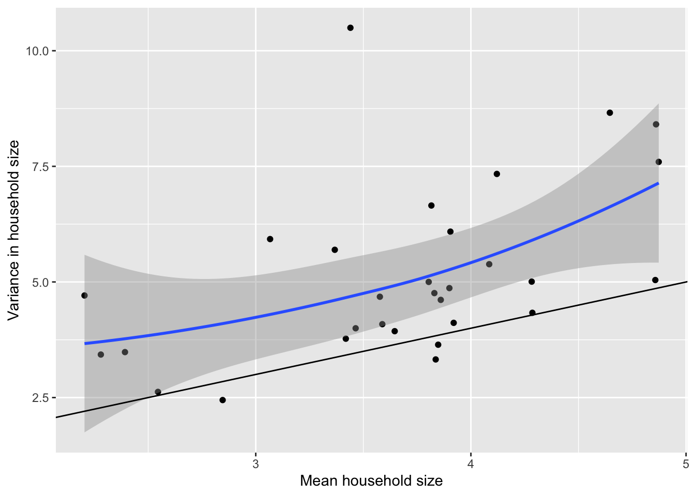
The blue curve indicates the best-fitting smoother to the set of 30 points.
In Figure 9, we see that there is more variance than expected under the Poisson model for each mean household size, but the relationship is slightly more quadratic than linear. This would argue for a negative binomial model in this instance. The negative binomial model also works reasonably well in most situations with a linear relationship between mean and variance, and it has the additional advantage of leading to a true likelihood and a true likelihood ratio (drop-in-deviance) test. AIC values can also be compared between non-nested negative binomial models, but since it is not likelihood-based, we cannot use (or even compute!) AIC values to compare non-nested quasi-Poisson models to each other. This also means that AIC is not usable for determining whether a quasi-Poisson or negative binomial model is preferred. We can compare the AIC of the negative binomial model to the Poisson as another way of checking for overdispersion, though this is usually redundant after robust EDA.
Negative binomial models, because the overdispersion parameter \(r\) must be positive, are unable to handle underdispersion (where the variance is less than the mean), while quasi-Poisson models can handle underdispersion simply by estimating \(\phi\) as less than 1.
A more detailed look at deviance residuals (Optional)
Case Study: Bald Eagles
Every year in late December, since 1921, birdwatchers in the Hamilton area of Ontario, Canada, have counted and recorded all the birds they see or hear in a day. The data was made available by the Bird Studies Canada website and distributed through the R for Data Science TidyTuesday project [@eagles2019]. We are particularly interested in how the Bald Eagle population has changed over time.
Data Organization
Each row of bald_eagles.csv contains information about bald eagles counts in Hamilton, Ontario, for one year. There are 37 rows covering 1981 through 2017. The variables include:
year= year of data collectioncount= number of birds observedhours= total person-hours of observation periodcount_per_hour= count divided by hourscount_per_week= count_per_hour multiplied by 168 hours per week
## # A tibble: 10 × 8
## year count hours count_per_hour count_per_week weeks log_count_per_week
## <dbl> <dbl> <dbl> <dbl> <dbl> <dbl> <dbl>
## 1 2008 9 227 0.0396 6.66 1.35 1.97
## 2 2009 5 194 0.0258 4.33 1.15 1.57
## 3 2010 3 226. 0.0133 2.23 1.35 1.00
## 4 2011 4 228. 0.0175 2.95 1.36 1.24
## 5 2012 3 195. 0.0154 2.59 1.16 1.13
## 6 2013 11 182. 0.0604 10.1 1.08 2.36
## 7 2014 6 179. 0.0335 5.62 1.07 1.81
## 8 2015 7 221 0.0317 5.32 1.32 1.76
## 9 2016 3 217. 0.0138 2.33 1.29 1.04
## 10 2017 12 199. 0.0604 10.1 1.18 2.36
## # ℹ 1 more variable: year_1981 <dbl>Exploratory Data Analysis
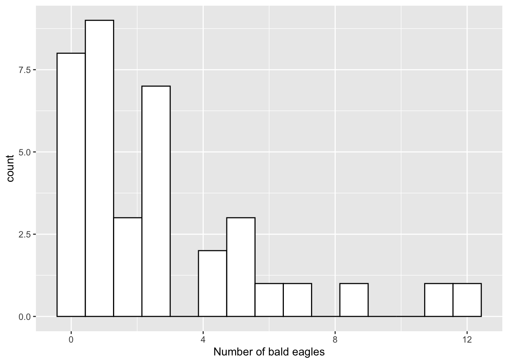
A graph of the number of bald eagles, Figure 10, reveals the pattern often found with distributions of counts of relatively rare events. In many years, no eagles or very few eagles were sighted, but a few years had larger eagle counts, making for a distribution that appears to be skewed right and far from normal. Therefore, Poisson regression should be used to model our data; Poisson random variables are often used to represent counts (e.g., number of bald eagles) per unit of time or space (e.g., one year).
In this data, there are two covariates of interest: time (as measured by year in which the count was conducted) and observation effort (as measured by the number of weeks people observed birds). Our primary question is: What trends over time do we see in bald eagle counts? Figure 11 shows how both bald eagle counts and observation effort changes over time. We can see an increase in both count and observational effort shortly after the year 2000.
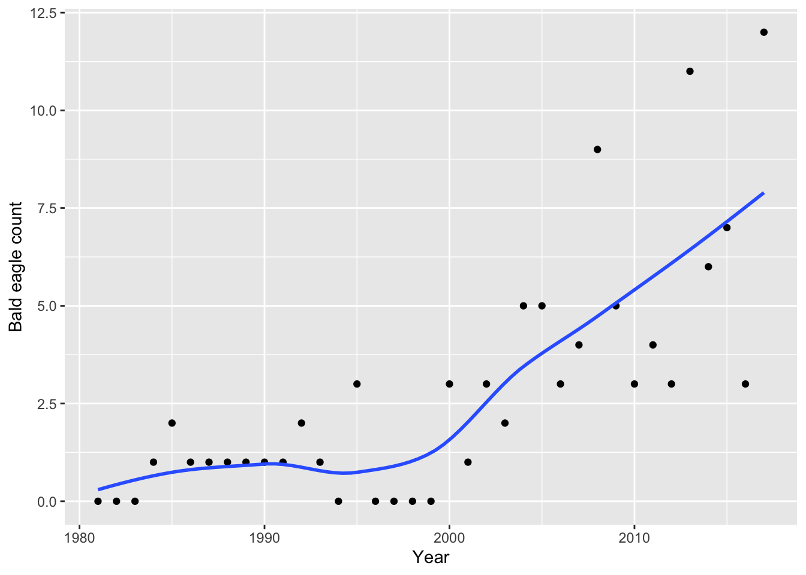
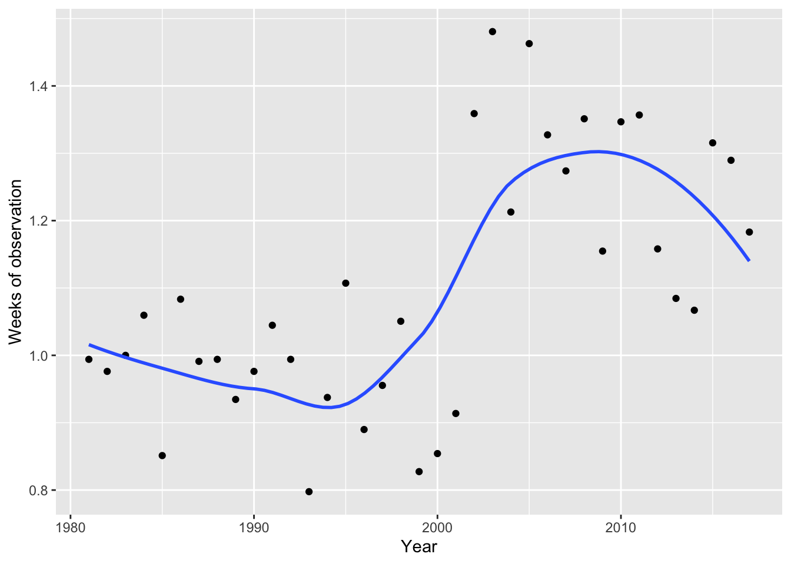
While a Poisson regression model is a good first choice because the responses are counts per year, it is important to note that the counts are not directly comparable because they come from different amounts of observation time. In more recent years, we see higher counts but also more person-hours of observation, as might be expected. This issue sometimes is referred to as the need to account for sampling effort. We cannot directly compare the 2 eagles observed in 1985 to the 7 eagles observed in 2015 when there were only 143 person-hours (0.85 weeks) of observation in 1985 compared with 221 person-hours (1.32 weeks) in 2015. It would be natural to expect more eagles observed in 2015 with more sampling effort. We can take the differences in observation time into account by including an offset in our model, which we will discuss in the next section.
In terms of our EDA, we will examine time trends in the rate of bald eagles sightings; for example, we will calculate the bald eagle counts per week (\(\frac{\textrm{number of bald eagles}}{\textrm{hours of observation}} \cdot (168 \textrm{ hours/week})\)). In Figure 12, we see that an increase in bald eagles observed per week is still visible after 2000, but the rate of increase is slightly slower than when plotting raw counts.
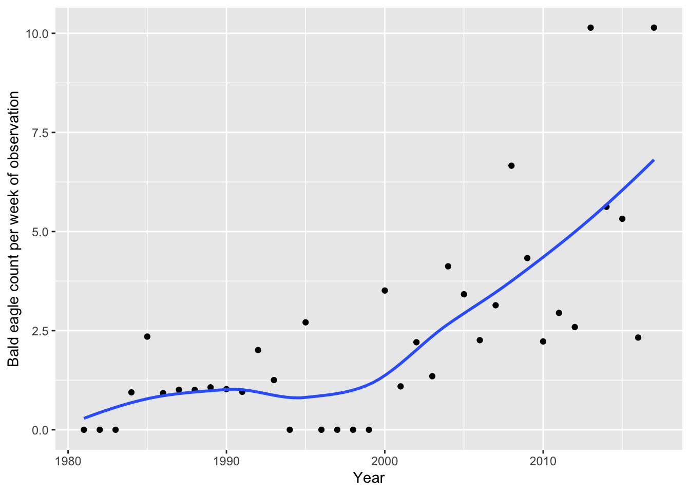
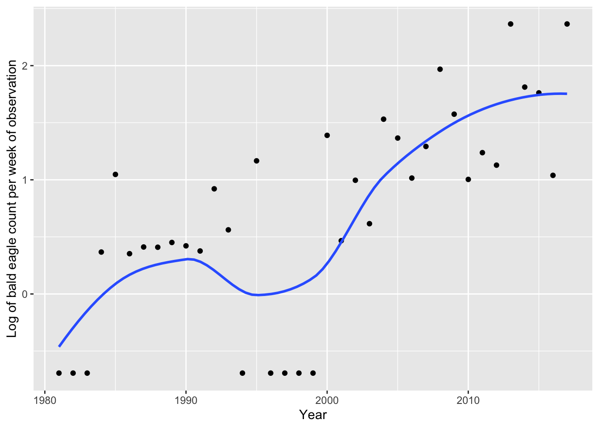
Offsets: Accounting for Sampling Effort
Although working with the observed rates (per week, or per 168 hours) is useful during the exploratory data analysis, we do not use these rates explicitly in the model. The counts (per year) are the Poisson responses when modeling, so we must take into account the observation time in a different way. Our approach is to include a term on the right side of the model called an offset, which is the log of the weeks of observation. There is an intuitive heuristic for the form of the offset. If we think of \(\lambda\) as the mean number of bald eagles per year, then \(\lambda/\textrm{weeks}\) represents the number per week of observation time, so that the yearly count is adjusted to be comparable across different amounts of observation time. Adjusting the yearly count by observation time is equivalent to adding \(log(\textrm{weeks})\) to the right-hand side of the Poisson regression equation—essentially adding a predictor with a fixed coefficient of 1:
\[\begin{align*} log(\frac{\lambda}{\textrm{weeks}} )= \beta_0 + \beta_1(\textrm{type}) \nonumber \\ log(\lambda)-log(\textrm{weeks}) = \beta_0 + \beta_1(\textrm{type}) \nonumber \\ log(\lambda) = \beta_0 + \beta_1(\textrm{type}) + log(\textrm{weeks}) \end{align*}\]
While this heuristic is helpful, it is important to note that it is not \(\frac{\lambda}{ \textrm{weeks}}\) that we are modeling. We are still modeling \(log(\lambda)\), but we’re adding an offset to adjust for differing observation time, where the offset has the unusual feature that the coefficient is fixed at 1.0. As a result, no estimated coefficient for weeks or \(log(\textrm{weeks})\) will appear in the output. As this heuristic illustrates, modeling \(log(\lambda)\) and adding an offset is equivalent to modeling rates, and coefficients can be interpreted in terms of rates.
Modeling Assumptions
In Figure 13, we see that variances in rates of eagle sightings are approximately equal to the mean rate of eagle sightings except in the final group of years. Thus, we have some reason to question the Poisson regression assumption of variability equal to the mean; we will have to return to this issue after some initial modeling. We might consider a negative binomial model which allows a quadratic form to the mean-variance relationship.
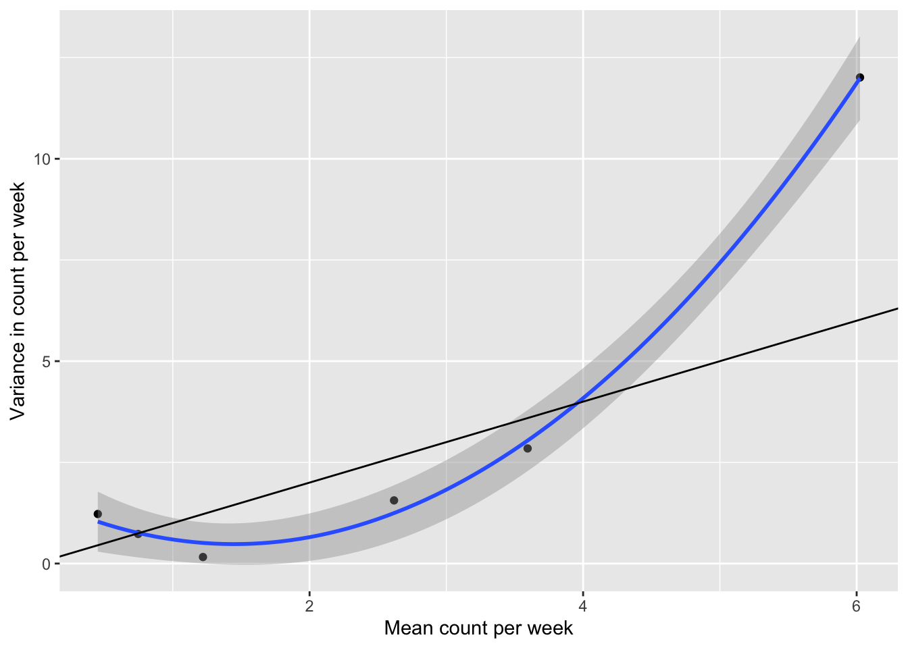
The black line has slope 1 and indicates the expected relationship under a Poisson model. The blue curve indicates the best-fitting smoother to the set of 6 points.
As far as other model assumptions, linearity with respect to \(log(\lambda / \textrm{weeks})\) seems pretty reasonable from Figure 12, once zeros are accounted for. Independence in counts from year to year also seems reasonable based on the data collection description.
Modeling Results
We are interested primarily in trends over time in eagle sightings. We have no control variables other than sampling effort, so we simply fit a model with year (centered at 1981) and our offset.
model_eagles <- glm(count ~ year_1981,
family = poisson,
offset = log(weeks),
data = eagles)## Estimate Std. Error z value Pr(>|z|)
## (Intercept) -0.79971104 0.31969178 -2.501506 1.236662e-02
## year_1981 0.07566483 0.01155782 6.546634 5.884818e-11## Residual deviance = 42.39031 on 35 df
## Dispersion parameter = 1From our model, bald eagle counts are significantly increasing over time (Z = 6.55, p < .001), even after adjusting for observation time. The estimated coefficient of 0.0757 means that the average eagle sighting rate per week has grown about 7.9% per year (since \(e^{0.0757}=1.0786\)) in Hamilton, Ontario. A Wald-type confidence interval for this factor can be constructed by first calculating a CI for the coefficient (\(0.0757 \pm 1.96 \cdot 0.0116\)) and then exponentiating to give 5.4% to 10.3%. From the estimated intercept, we see that average eagle sightings per week in 1981 are 0.45 (since \(e^{-0.7997}=0.4495\)). Adjustments for potential overdispersion using either quasi-Poisson or negative binomial regression provide minimal changes to model coefficients and tests; see below for output from fitting a negative binomial regression model.
## Estimate Std. Error z value Pr(>|z|)
## (Intercept) -0.79984025 0.33444641 -2.391535 1.677809e-02
## year_1981 0.07571707 0.01239979 6.106318 1.019559e-09## Residual deviance = 36.97719 on 35 df
## Dispersion parameter (theta) = 19.33161Case Study: Weekend Drinking
Sometimes when analyzing Poisson data, you may see many more zeros in your data set than you would expect for a Poisson random variable. For example, an informal survey of students in an introductory statistics course included the question, “How many alcoholic drinks did you consume last weekend?”. This survey was conducted on a dry campus where no alcohol is officially allowed, even among students of drinking age, so we expect that some portion of the respondents never drink. The non-drinkers would thus always report zero drinks. However, there will also be students who are drinkers reporting zero drinks because they just did not happen to drink during the past weekend. Our zeros, then, are a mixture of responses from non-drinkers and drinkers who abstained during the past weekend. Ideally, we’d like to sort out the non-drinkers and drinkers when performing our analysis.
Research Question
The purpose of this survey is to explore factors related to drinking behavior on a dry campus. What proportion of students on this dry campus never drink? What factors, such as off-campus living and sex, are related to whether students drink? Among those who do drink, to what extent is moving off campus associated with the number of drinks in a weekend? It is commonly assumed that males’ alcohol consumption is greater than females’; is this true on this campus? Answering these questions would be a simple matter if we knew who was and was not a drinker in our sample. Unfortunately, the non-drinkers did not identify themselves as such, so we will need to use the data available with a model that allows us to estimate the proportion of drinkers and non-drinkers.
Data Organization
Each line of weekendDrinks.csv contains data provided by a student in an introductory statistics course. In this analysis, the response of interest is the respondent’s report of the number of alcoholic drinks they consumed the previous weekend, whether the student lives off.campus (recorded as 0 = no and 1 = yes), and sex (where two levels were reported: “f” for female and “m” for male). We will also consider whether a student is likely a firstYear student based on the dorm they live in. Here is a sample of observations from this data set:
head(zip_data[2:5])# A tibble: 6 × 4
drinks sex off_campus first_year
<dbl> <chr> <dbl> <lgl>
1 0 f 0 TRUE
2 5 f 0 FALSE
3 10 m 0 FALSE
4 0 f 0 FALSE
5 0 m 0 FALSE
6 3 f 0 FALSE Exploratory Data Analysis
As always we take stock of the amount of data; here there are 77 observations. Large sample sizes are preferred for the type of model we will consider, and n=77 is on the small side. We proceed with that in mind.
A premise of this analysis is that we believe that those responding with zero drinks are coming from a mixture of non-drinkers and drinkers who abstained the weekend of the survey.
- Non-drinkers: respondents who never drink and would always reply with zero.
- Drinkers: this includes those responding with one or more drinks and also people who are drinkers but did not happen to imbibe the past weekend. This second group replied zero in the survey but are not considered non-drinkers.
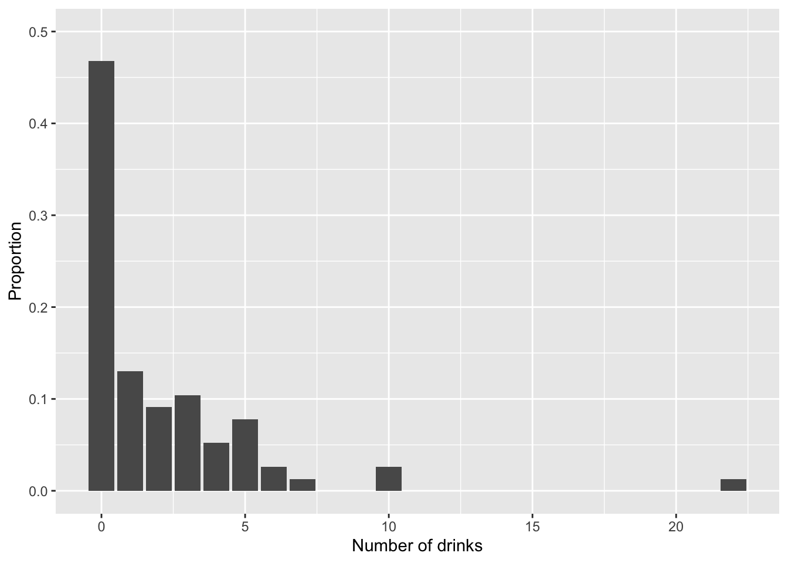
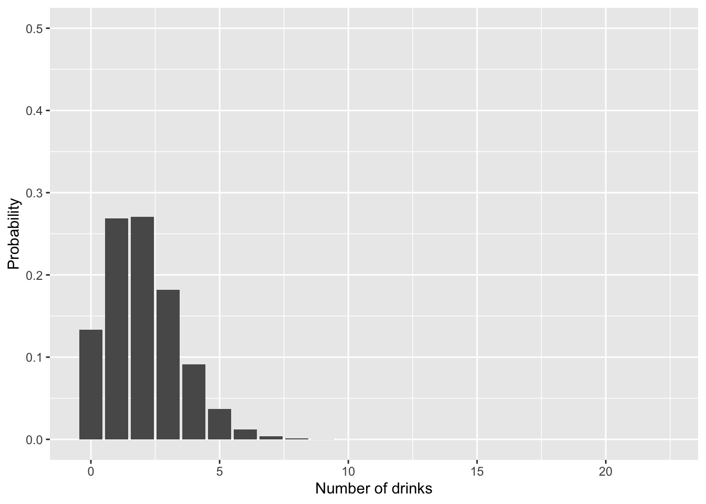
Beginning the EDA with the response, number of drinks, we find that over 46% of the students reported no drinks during the past weekend. Figure 14(a) portrays the observed number of drinks reported by the students. The mean number of drinks reported the past weekend is 2.013. Our sample consists of 72.7% female students, 23.4% first-year students, and 9.1% of students who live off campus.
Because our response is a count, it is natural to consider a Poisson regression model. You may recall that a Poisson distribution has only one parameter, \(\lambda\), for its mean and variance. Here we will include an additional parameter, \(\alpha\). We define \(\alpha\) to be the true proportion of non-drinkers in the population.
The next step in the EDA is especially helpful if you suspect your data contains excess zeros. Figure 14(b) is what we might expect to see under a Poisson model. Bars represent the probabilities for a Poisson distribution (using the Poisson probability formula) with \(\lambda\) equal to the mean observed number of drinks, 2.013 drinks per weekend. Comparing this Poisson distribution to what we observed (Figure 14(a)), it is clear that many more zeros have been reported by the students than you would expect to see if the survey observations were coming from a Poisson distribution. This doesn’t surprise us because we had expected a subset of the survey respondents to be non-drinkers; i.e., they would not be included in this Poisson process. This circumstance actually arises in many Poisson regression settings. We will define \(\lambda\) to be the mean number of drinks among those who drink, and \(\alpha\) to be the proportion of non-drinkers (“true zeros”). Then, we will attempt to model \(\lambda\) and \(\alpha\) (or functions of \(\lambda\) and \(\alpha\)) simultaneously using covariates like sex, first-year status, and off-campus residence. This type of model is referred to as a zero-inflated Poisson model or ZIP model.
We should then continue our EDA by examining potential covariates in relation to two response variables: whether a respondent had any 0 drinks or not (binary) and the number of drinks a respondent reported for last weekend (count). While the binary response can provide information about which covariates may be related to \(\alpha\), the information is imperfect since \(\alpha\) is the proportion of true non-drinkers, not the proportion of those who didn’t drink last weekend. Similarly, while the count response can provide information about which covariates may be related to \(\lambda\), this information is also imperfect, because \(\lambda\) describes the mean number of drinks among those who drink, not among all respondents. Nevertheless, a few exploratory plots and tables can help guide us toward good starting points in our modeling.
As we see in Figure 15 and Figure 16, both the proportion of respondents with at least one drink and the number of drinks last weekend appear higher for students who identify as male, students living off campus, and students in their first year.
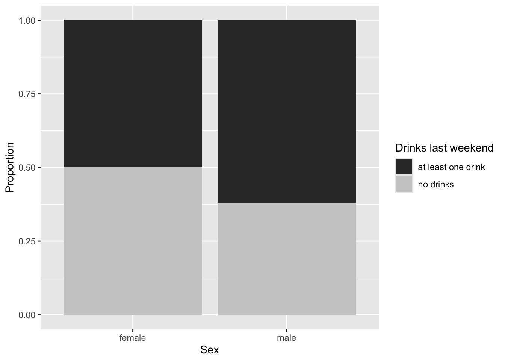
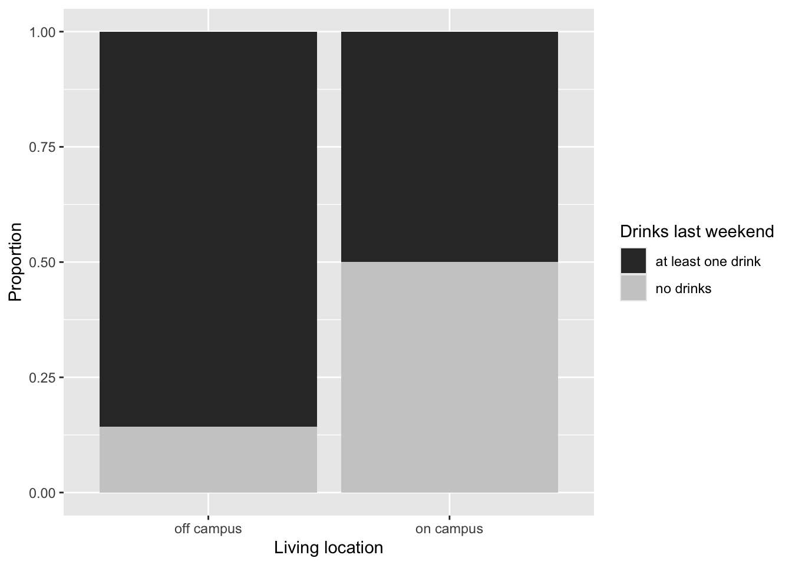
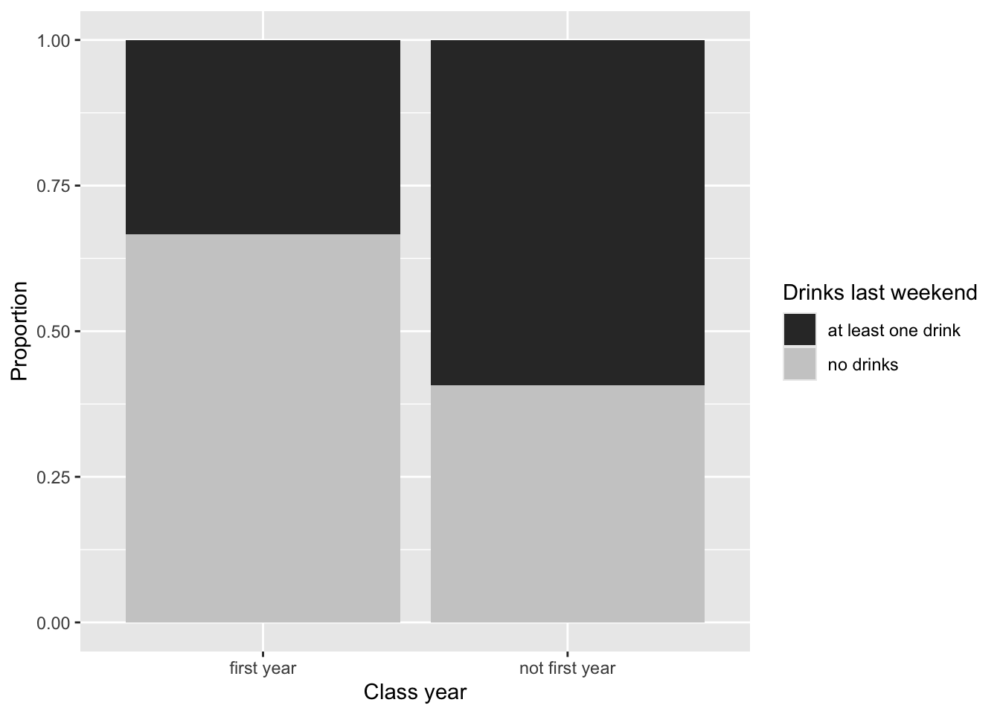
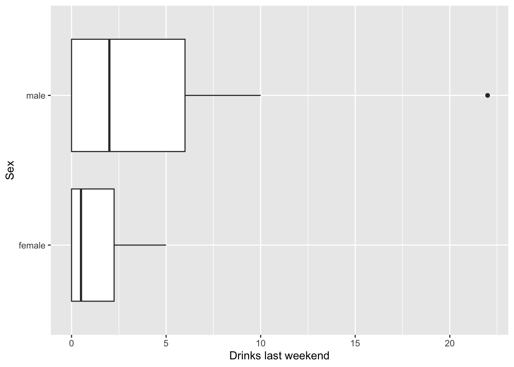
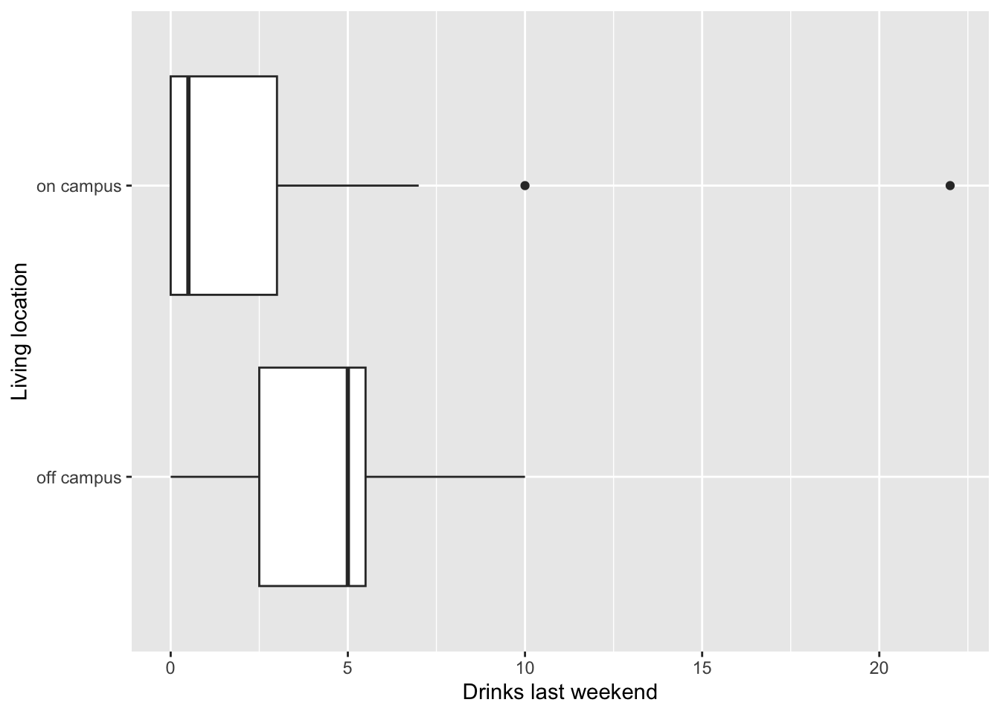
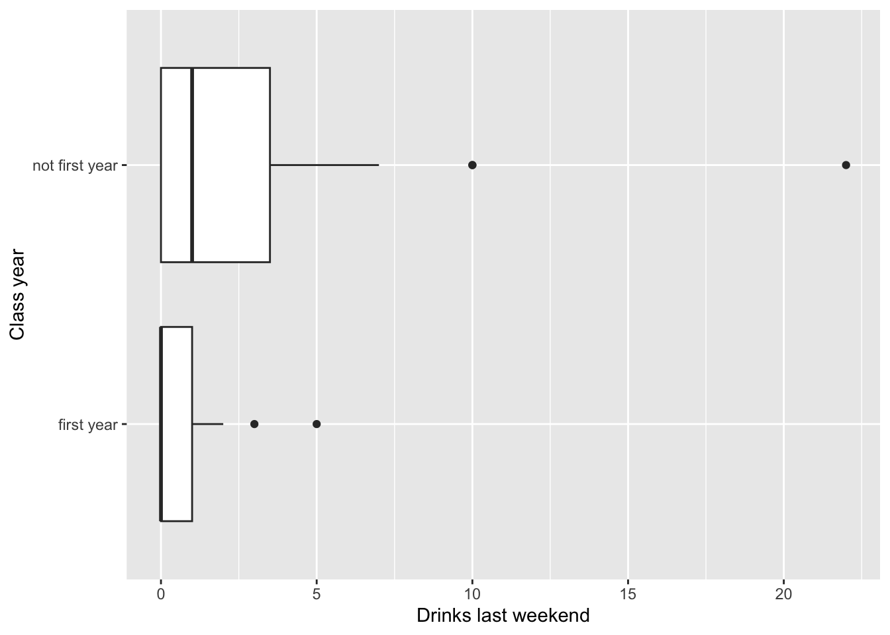
Zero-Inflated Poisson Models
Initial Models
We first fit a simple Poisson model with the covariates off_campus and sex.
pois_m1 <- glm(drinks ~ off_campus + sex,
family = poisson,
data = zip_data)## Estimate Std. Error z value Pr(>|z|)
## (Intercept) 0.1292692 0.1241189 1.041494 2.976462e-01
## off_campus 0.8976455 0.2008250 4.469790 7.829627e-06
## sexm 1.1153735 0.1610661 6.924943 4.361498e-12## Residual deviance = 230.544 on 74 df
## Dispersion parameter = 1# Exponentiated coefficients
exp(coef(pois_m1))## (Intercept) off_campus sexm
## 1.137996 2.453819 3.050707# Goodness-of-fit test
gof_pvalue = 1 - pchisq(pois_m1$deviance, pois_m1$df.residual)
gof_pvalue## [1] 0Both covariates are statistically significant, but a goodness-of-fit test reveals that there remains significant lack-of-fit (residual deviance: 230.54 with only 74 df; p<.001 based on \(\chi^2\) test with 74 df). In the absence of important missing covariates or extreme observations, this lack-of-fit may be explained by the presence of a group of non-drinkers.
Fitting a ZIP Model
A zero-inflated Poisson regression model to take non-drinkers into account consists of two parts:
- One part models the association, among drinkers, between number of drinks and the predictors of sex and off-campus residence.
- The other part uses a predictor for first-year status to obtain an estimate of the proportion of non-drinkers based on the reported zeros.
The form for each part of the model follows. The first part looks like an ordinary Poisson regression model:
\[ log(\lambda)=\beta_0+\beta_1\textrm{off\_campus}+ \beta_2\textrm{sex} \] where \(\lambda\) is the mean number of drinks in a weekend among those who drink. The second part has the form
\[ logit(\alpha)=\beta_0+\beta_1\textrm{first\_year} \] where \(\alpha\) is the probability of being in the non-drinkers group and \(logit(\alpha) = log( \alpha/(1-\alpha))\). We’ll provide more detail on the logit in [Chapter 6: Logistic Regression]. There are many ways in which to structure this model; here we use different predictors in the two pieces, although it would have been perfectly fine to use the same predictors for both pieces, or even no predictors for one of the pieces.
How is it possible to fit such a model? We cannot observe whether a respondent is a drinker or not (which probably would’ve been good to ask, in retrospect!). The ZIP model is a special case of a more general type of statistical model referred to as a latent variable model. More specifically, it is a type of a mixture model where observations for one or more groups occur together and the group membership is unknown. Zero-inflated models are a particularly common example of a mixture model, but the response does not need to follow a Poisson distribution. Likelihood methods are at the core of this methodology, but fitting is an iterative process where it is necessary to start out with some guesses (or starting values). In general, it is important to know that models like ZIP exist, although we’ll only explore interpretations and fitting options for a single case study here.
Here is the general idea of how ZIP models are fit. Imagine that the graph of the Poisson distribution in Figure 14(b) is removed from the observed data distribution in Figure 14(a). Some zero responses will remain. These would correspond to non-drinkers, and the proportion of all observations these zeros constitute might make a reasonable estimate for \(\alpha\), the proportion of non-drinkers. The likelihood is used and some iterating in the fitting process is involved because the Poisson distribution in Figure 14(b) is based on the mean of the observed data, which means it is the average among all students, not only among drinkers. Furthermore, the likelihood incorporates the predictors, sex and off_campus. So there is a little more to it than computing the proportion of zeros, but this heuristic should provide you a general idea of how these kinds of models are fit. We will use the R function zeroinfl from the package pscl to fit a ZIP model.
zip_m2 <- zeroinfl(drinks ~ off_campus + sex | first_year,
data = zip_data)## $count
## Estimate Std. Error z value Pr(>|z|)
## (Intercept) 0.7542747 0.1440035 5.237891 1.624221e-07
## off_campus 0.4159420 0.2058602 2.020507 4.333078e-02
## sexm 1.0209002 0.1751937 5.827264 5.634331e-09
##
## $zero
## Estimate Std. Error z value Pr(>|z|)
## (Intercept) -0.6036151 0.3114485 -1.938090 0.05261230
## first_yearTRUE 1.1363880 0.6095155 1.864412 0.06226388## Log likelihood = -140.764exp(coef(zip_m2)) # exponentiated coefficients## count_(Intercept) count_off_campus count_sexm zero_(Intercept)
## 2.1260689 1.5157979 2.7756924 0.5468312
## zero_first_yearTRUE
## 3.1154949Our model uses first_year to distinguish drinkers and non-drinkers (“Zero-inflation model coefficients”) and off_campus and sex to help explain the differences in the number of drinks among drinkers (“Count model coefficients”). Again, we could have used the same covariates for the two pieces of a ZIP model, but neither off_campus nor sex proved to be a useful predictor of drinkers vs. non-drinkers after we accounted for first-year status.
We’ll first consider the “Count model coefficients,” which provide information on how the sex and off-campus status of a student who is a drinker are related to the number of drinks reported by that student over a weekend. As we have done with previous Poisson regression models, we exponentiate each coefficient for ease of interpretation. Thus, for those who drink, the average number of drinks for males is \(e^{1.0209}\) or 2.76 times the number for females (Z = 5.827, p < 0.001) given that you are comparing people who live in comparable settings, i.e., either both on or both off campus. Among drinkers, the mean number of drinks for students living off campus is \(e^{0.4159}=1.52\) times that of students living on campus for those of the same sex (Z = 2.021, p = 0.0433).
The “Zero-inflation model coefficients” refer to separating drinkers from non-drinkers. An important consideration in separating drinkers from non-drinkers may be whether this is their first year, where firstYear is a 0/1 indicator variable.
We have \[ log(\alpha/(1-\alpha)) =-0.6036+1.1364\textrm{first\_year} \]
However, we are interested in \(\alpha\), the proportion of non-drinkers. Exponentiating the coefficient for the first-year term for this model yields 3.12. Here it is interpreted as the odds (\(\frac{\alpha}{1-\alpha}\)) that a first-year student is a non-drinker is 3.12 times the odds that an upper-class student is a non-drinker. Furthermore, with a little algebra (solving the equation with \(log(\alpha/(1-\alpha)\)) for \(\alpha\)), we have
\[ \hat{\alpha} = \frac{e^ {-0.6036+1.1364(\textrm{first\_year})}} {1+e^{ -0.6036+1.1364(\textrm{first\_year}) } }. \]
The estimated chance that a first-year student is a non-drinker is
\[ \frac{e^{0.533}}{1+e^{0.533}} = 0.630 \] or 63.0%, while for non-first-year students, the estimated probability of being a non-drinker is 0.354. If you have seen logistic regression, you’ll recognize that this transformation is what is used to estimate a probability. More on this in [Chapter 6: Logistic Regression].
The Vuong Test (optional)
Moving from ordinary Poisson to zero-inflated Poisson has helped us address additional research questions: What proportion of students are non-drinkers, and what factors are associated with whether or not a student is a non-drinker? While a ZIP model seems more faithful to the nature and structure of this data, can we quantitatively show that a zero-inflated Poisson is better than an ordinary Poisson model?
We cannot use the drop-in-deviance test we discussed earlier because these two models are not nested within one another. Vuong [-@Vuong1989] devised a test to make this comparison for the special case of comparing a zero-inflated model and ordinary regression model. Essentially, the Vuong Test is able to compare predicted probabilities of non-nested models.
vuong(pois_m1, zip_m2)## Vuong Non-Nested Hypothesis Test-Statistic:
## (test-statistic is asymptotically distributed N(0,1) under the
## null that the models are indistinguishible)
## -------------------------------------------------------------
## Vuong z-statistic H_A p-value
## Raw -2.688691 model2 > model1 0.0035866
## AIC-corrected -2.534095 model2 > model1 0.0056369
## BIC-corrected -2.352922 model2 > model1 0.0093133Here, we have structured the Vuong Test to compare Model 1: Ordinary Poisson Model to Model 2: Zero-inflation Model. If the two models do not differ, the test statistic for Vuong would be asymptotically standard Normal and the p-value would be relatively large. Here the first line of the output table indicates that the zero-inflation model is better (\(Z=-2.69,p=.0036\)). Note that the test depends upon sufficiently large n for the Normal approximation, so since our sample size (n=77) is somewhat small, we need to interpret this result with caution. More research is underway to address statistical issues related to these comparisons.
Residual Plot
Fitted values (\(\hat{y}\)) and residuals (\(y-\hat{y}\)) can be computed for zero-inflation models and plotted. Figure 17 reveals that one observation appears to be extreme (Y=22 drinks during the past weekend). Is this a legitimate observation or was there a transcribing error? Without the original respondents, we cannot settle this question. It might be worthwhile to get a sense of how influential this extreme observation is by removing Y=22 and refitting the model.
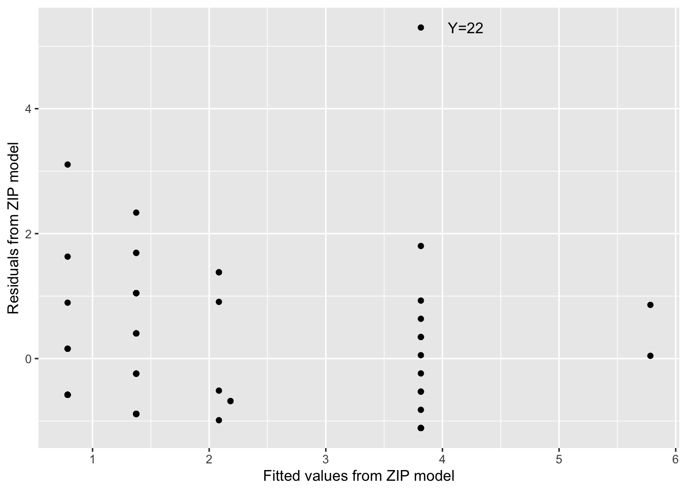
Limitations
Given that you have progressed this far in your statistical education, the weekend drinking survey question should raise some red flags. What time period constitutes the “weekend”? Will some students be thinking of only Saturday night, while others include Friday night or possibly Sunday evening? What constitutes a drink—a bottle of beer? How many drinks will a respondent report for a bottle of wine? Precise definitions would vastly improve the quality of this data. There is also an issue related to confidentiality. If the data is collected in class, will the teacher be able to identify the respondent? Will respondents worry that a particular response will affect their grade in the class or lead to repercussions on a dry campus?
In addition to these concerns, there are a number of other limitations that should be noted. Following the concern of whether this data represents a random sample of any population (it doesn’t), we also must be concerned with the size of this data set. ZIP models are not appropriate for small samples and this data set is not impressively large.
At times, a mixture of zeros occurs naturally. It may not come about because of neglecting to ask a critical question on a survey, but the information about the subpopulation may simply not be ascertainable. For example, visitors from a state park were asked as they departed how many fish they caught, but those who report 0 could be either non-fishers or fishers who had bad luck. These kinds of circumstances occur often enough that ZIP models are becoming increasingly common.
In other cases, zero counts may not represent a mixture from two subpopulations, but one subpopulation might report 0 by definition, while another subpopulation reports counts of 1 or higher. For example, if our response variable is the number of doctor visits by a person in a single year, we may find that those who never visit the doctor are fundamentally different from those who visit at least once. Those who visit the doctor “clear the hurdle” and we want to model number of visits from those individuals, after first using modeling to separate those who visit from those who don’t. These so-called hurdle models are discussed in the next section.
Case Study: Going Vague
In a 2018 study, @Chapp2018 scraped every issue statement from webpages of candidates for the U.S. House of Representatives, counting the number of issues candidates commented on and scoring the level of ambiguity of each statement. We will focus on the issue counts, and determining which attributes (of both the district as a whole and the candidates themselves) are associated with candidate silence (commenting on 0 issues) and a willingness to comment on a greater number of issues.
Research Questions
Which candidates for U.S. House are more likely to have at least one issue page and to offer statements on a greater number of issues? How are a candidate’s political party, incumbency status, and political beliefs related to their willingness to post stands and ideas on issues? How do the demographics and political beliefs of voters in the candidate’s district impact a candidate’s willingness to engage? How does the interplay between candidate profile and voter profile affect a candidate’s willingness to comment on issues?
Data Organization
The data set ambiguity.csv contains the following variables:
name= candidate namedistID= unique identification number for Congressional districtideology= candidate left-right orientation (higher scores indicate further to the right)democrat= 1 if Democrat, 0 if Republicanmismatch= disagreement between candidate ideology and district voter ideology (higher scores indicate further from the median voter)incumbent= 1 if incumbent, 0 if notdemHeterogeneity= how much voters in a district differ according to race, education, occupation, etc. (higher scores indicate greater differences in demographics)attHeterogeneity= how much voters in a district differ according to political ideology (higher scores indicate greater differences in political ideology)distLean= overall ideological lean in a district (higher scores indicate further to the right)totalIssuePages= number of issues candidates commented on (response)
| name | distID | democrat_fct | incumbent_fct | totalIssuePages | ambiguity | ideology | mismatch |
|---|---|---|---|---|---|---|---|
| DUNBAR, FORREST | 200 | Democrat | Challenger | 9 | 0.7399 | -0.6268 | 1.0311203 |
| YOUNG, DONALD E | 200 | Republican | Incumbent | 15 | 0.6661 | 0.7771 | 0.3727797 |
| LEFLORE, BURTON R | 101 | Democrat | Challenger | 1 | 0.0156 | 0.3514 | 0.1818866 |
| BYRNE, BRADLEY ROBERTS | 101 | Republican | Incumbent | 7 | 0.3933 | 1.0819 | 0.5486134 |
| WRIGHT, ERICK | 102 | Democrat | Challenger | 6 | 0.3800 | -0.0038 | 0.6848035 |
Exploratory Data Analysis
In Figure 18, we see that observed total issue pages takes on a Poisson shape, as we might expect with a count variable, except for the large spike at 0. In Section 1.11, we handled these excess zeros with a zero-inflated Poisson model, modeling zeros as a mixture of non-drinkers and drinkers who reported zero for the weekend in question. With issue statements, this mixture model makes less sense. Candidates decide either to post issue statements or not. Those who decide to not post any issue statements comprise our zeros, and for those who decide to post issue statements, we can model the number they choose to post. Since those who decide to post issue statements “leap over” the zero category, these models are referred to as hurdle models.
Warning: Removed 1 row containing missing values or values outside the scale range
(`geom_segment()`).
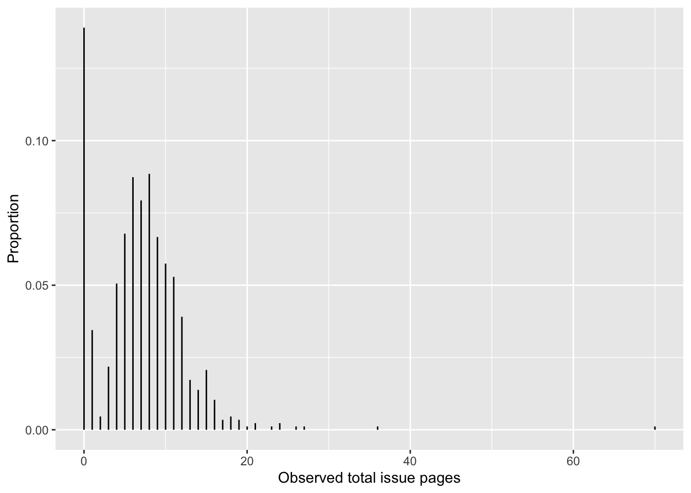
Similar to ZIP models, in hurdle models we will simultaneously fit two models based on the same response:
- a model to determine if a candidate remains silent (posts on no issues) or not (posts on as least one issue), applied to all candidates
- a model to determine the number of issues a candidate posts on, applied to only those candidates who post at least one issue statement
Thus, our exploratory data analysis should investigate both responses.
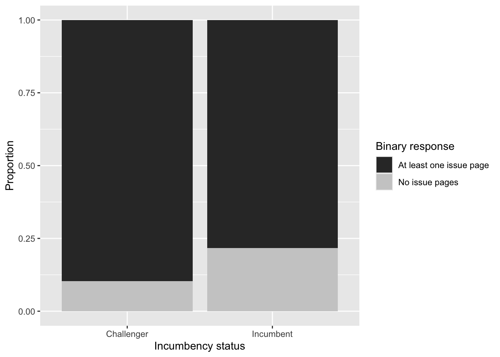
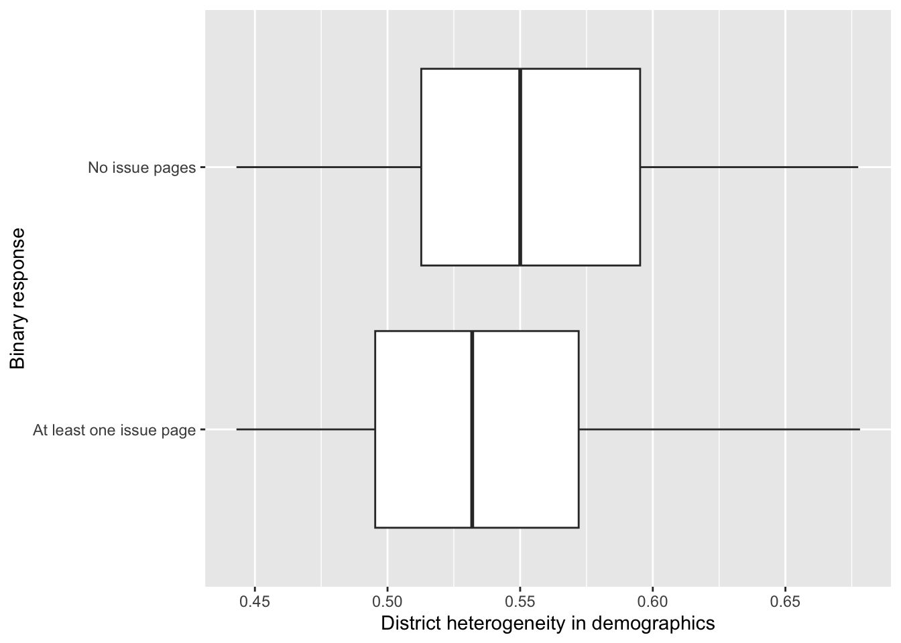
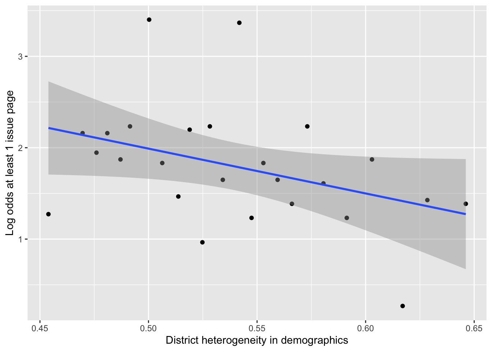
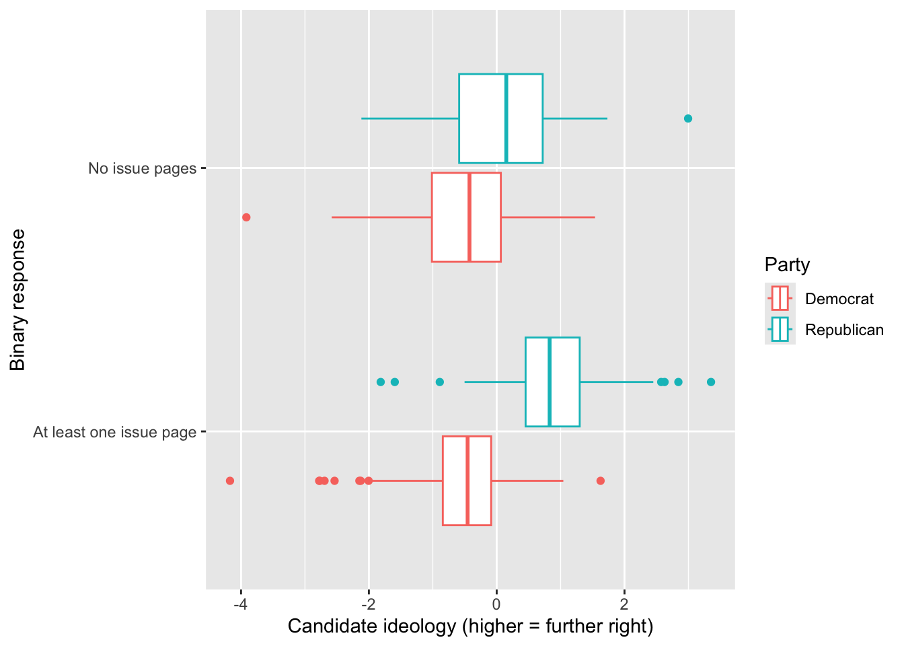
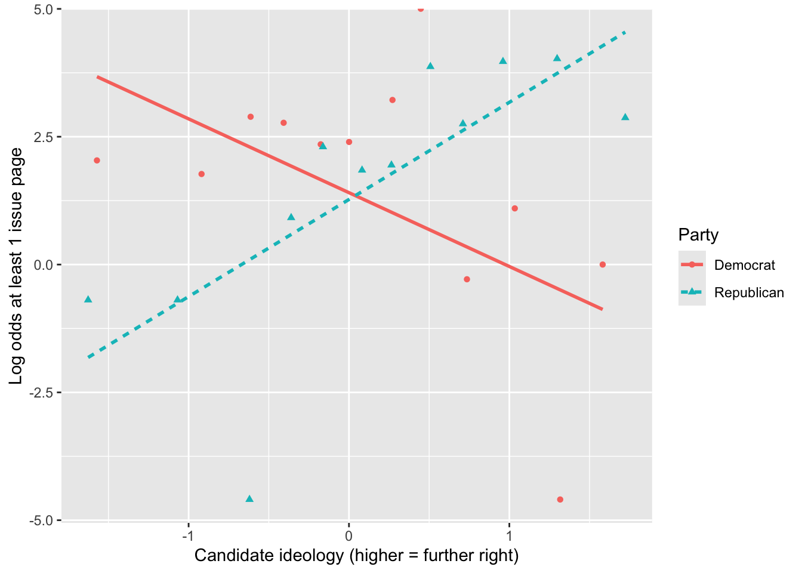
Figure 19, Figure 20, and Figure 21 examine all candidates to determine promising variables to explain our binary response: if a candidate remains silent (posts on no issues) or not (posts on as least one issue). To investigate categorical explanatory variables, we can use segmented bar plots as in Figure 19. Here we see that challengers are more likely to post at least one issue page compared with incumbents. To investigate numeric explanatory variables, we can use boxplots or, better yet, a scatterplot of the log odds that a candidate posts at least one issue page as in Figure 20. Here we see that more heterogeneity in demographics among voters in a district is associated with lower odds of posting at least one issue page. Finally, to investigate the interaction between a categorical and a numeric variable, we can expand the plots in Figure 20 by showing separate boxplots or scatterplots for each category as in Figure 21. Here we see, especially in the coded scatterplot, that there is evidence of a potential interaction between party and candidate ideology, where candidates whose ideology is further to the extreme in their party are more likely to post at least one issue page.
Note
Note that hurdle models focus on modeling non-zeros, whereas ZIP models focus on modeling true zeros. This really only affects the interpretation of coefficients from the logistic part of the model.
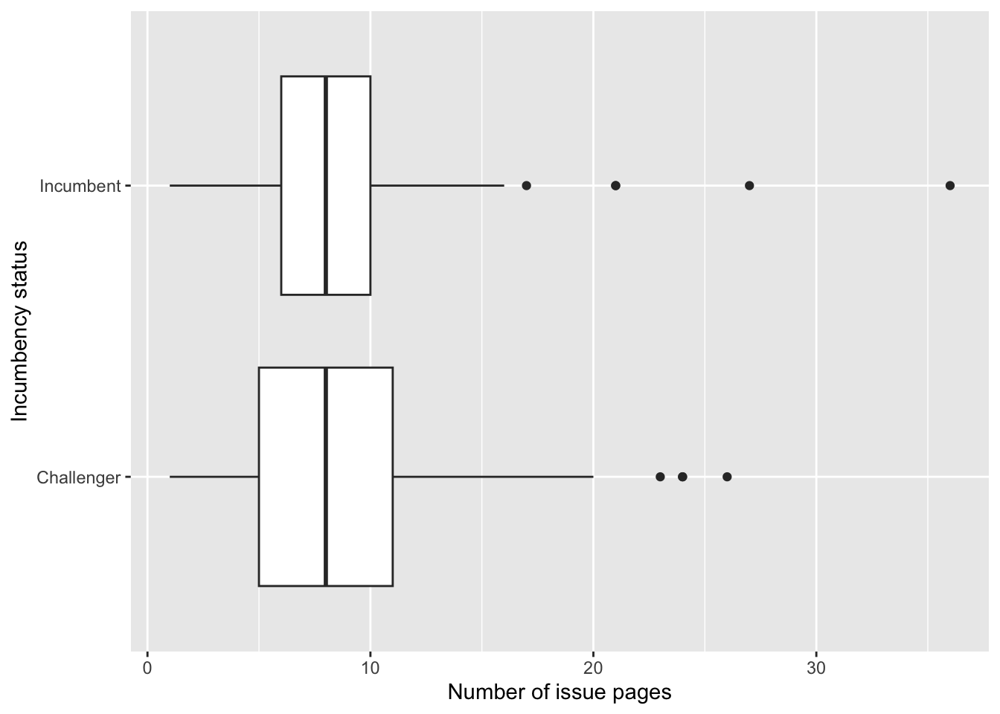
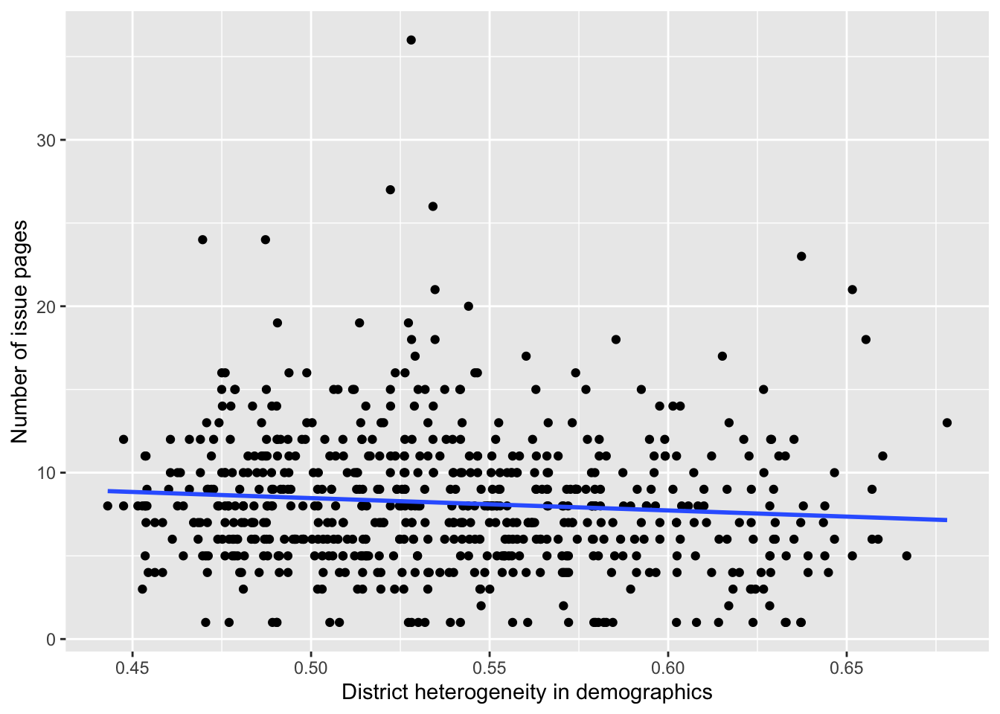
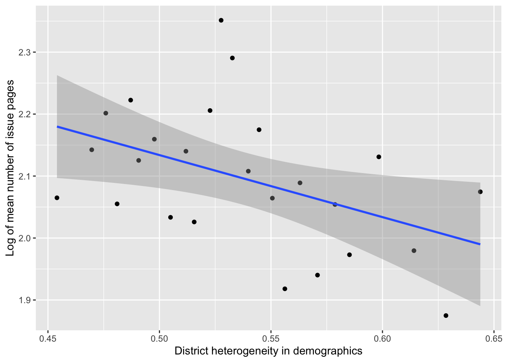

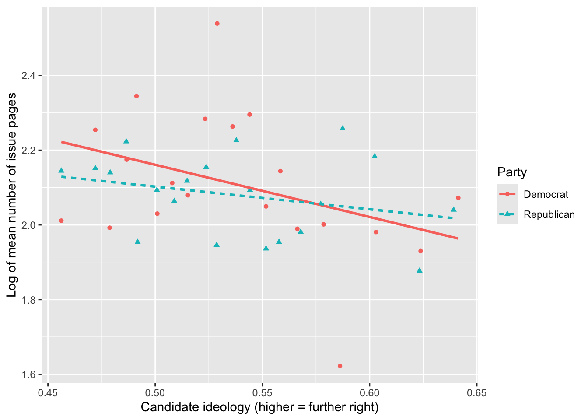
Figure 22, Figure 23, and Figure 24 examine candidates with at least one issue page to determine promising variables to explain our count response: the total number of issue pages posted. To investigate categorical explanatory variables, we can use boxplots as in Figure 22. Here we see little apparent different between incumbents and challengers with respect to number of issue pages, although challengers have more spread. To investigate numeric explanatory variables, we can use scatterplots with one point per candidate or, better yet, scatterplots of the log mean number of issue pages after grouping candidates by their district heterogeneity scores, as in Figure 23. Here we see that more heterogeneity in demographics among voters in a district is associated with lower number of issue pages, on average. Finally, to investigate the interaction between a categorical and a numeric variable, we can expand the plots in Figure 23 by showing separate scatterplots for each category as in Figure 24. Here we see evidence of a potential interaction between party and candidate ideology, where candidates whose ideology is further to the extreme in their party likely to post a greater number of issue pages.
Hurdle Models
Fitting a Hurdle Model
Similar to ZIP models (Section 1.12), we will define \(\lambda\) to be the mean number of drinks among those who posted at least one issue page, and \(\alpha\) to be the proportion of candidates who post at least one issue page (“true non-zeros” or “true hurdlers”). Then, we will attempt to model \(\lambda\) and \(\alpha\) (or functions of \(\lambda\) and \(\alpha\)) simultaneously using characteristics of the candidates and their districts. We can use different predictors if we wish in the two parts of our model. This type of model is referred to as a hurdle model.
Once again, the response for the binary part of the model is the log odds of posting at least one issue page, that is \(logit(\alpha) = log( \alpha/(1-\alpha))\) where \(\alpha\) is the probability of being in the posting group, as described more fully in [Chapter 6: Logistic Regression]. The response for the count part of the model is \(log(\lambda)\), where \(\lambda\) is the mean number of issue pages posted among those who choose to post at least one.
One additional difference between a hurdle model and a ZIP model is that, in a hurdle model, the count portion of the model is actually based on a truncated Poisson distribution rather than a full Poisson distribution. While a full Poisson distribution has a domain starting at 0, a truncated Poisson distribution has a domain starting at 1. Therefore, while from 3: Distribution Theory we know that a full Poisson distribution has probability mass function
\[ P(Y=y) = \frac{e^{-\lambda}\lambda^y}{y!} \quad \textrm{for} \quad y = 0, 1, \ldots, \infty, \] a truncated Poisson distribution has probability mass function
\[ P(Y=y) = \frac{e^{-\lambda}\lambda^y}{y!}/[1-e^{-\lambda}] \quad \textrm{for} \quad y = 1, 2, \ldots, \infty. \] Despite this difference, coefficients in the count portion of a hurdle model are still interpreted in the same way as coefficients in a Poisson model, as multiplicative effects on mean count (after exponentiating).
Hurdle Models for Issue Pages
As expected with our large number of zeros, a regular Poisson model shows a significant lack of fit, so we jump right into fitting hurdle models.
We will focus on interpretations of the hurdle model below. While additional steps could be considered to simplify both portions of our model, the model below matches the “‘Silence’ and Issue Count Model” columns in Table 1 of @Chapp2018.
hurdle_model <- hurdle(totalIssuePages ~ democrat + incumbent +
demHeterogeneity + mismatch + attHeterogeneity + distLean +
ideology + ideology:democrat | democrat + incumbent +
demHeterogeneity + mismatch + attHeterogeneity + distLean +
ideology + ideology:democrat,
data = ambiguity,
dist="poisson",
zero="binomial")## $count
## Estimate Std. Error z value Pr(>|z|)
## (Intercept) 2.45103877 0.27047135 9.0621012 1.279614e-19
## democrat 0.07959808 0.04610474 1.7264622 8.426430e-02
## incumbent -0.15641727 0.03387996 -4.6168076 3.896882e-06
## demHeterogeneity -1.17320291 0.30777391 -3.8118986 1.379035e-04
## mismatch -0.24145000 0.05091321 -4.7423839 2.112178e-06
## attHeterogeneity 0.26047088 0.15455577 1.6852873 9.193315e-02
## distLean -0.01690677 0.05671467 -0.2981022 7.656252e-01
## ideology 0.22218239 0.04942142 4.4956696 6.935136e-06
## democrat:ideology -0.49037897 0.08754552 -5.6014172 2.126064e-08
##
## $zero
## Estimate Std. Error z value Pr(>|z|)
## (Intercept) 6.50252289 2.4122716 2.6956015 7.026168e-03
## democrat 0.10514268 0.3644420 0.2885032 7.729616e-01
## incumbent -1.20851991 0.3217195 -3.7564393 1.723480e-04
## demHeterogeneity -7.39399676 3.1348297 -2.3586598 1.834106e-02
## mismatch -1.13047820 0.3103128 -3.6430283 2.694492e-04
## attHeterogeneity 0.51781946 1.1789724 0.4392125 6.605075e-01
## distLean -0.09105567 0.5224843 -0.1742745 8.616498e-01
## ideology 1.45878121 0.3047631 4.7866067 1.696247e-06
## democrat:ideology -2.40739750 0.4294591 -5.6056502 2.074746e-08## Log likelihood = -1995.361AIC(hurdle_model)## [1] 4026.721BIC(hurdle_model) # uses 665 = complete cases## [1] 4107.718For the “zero” portion of the hurdle model, exponentiated coefficients describe the multiplicative effect of a predictor on the odds of posting at least one issue page. If we consider incumbent as an example, \(e^{-1.2085}=0.299\) and \(1/e^{-1.2085}=3.35\). Thus, the odds a challenger posts at least one issue page are 3.35 times greater than the odds an incumbent posts at least one issue page, holding candidate party, ideology, and mismatch, along with district lean, demographic heterogeneity, and attitudinal heterogeneity all constant.
For the “count” portion of the hurdle model, exponentiated coefficients describe the multiplicative effect of a predictor on the mean number of issue pages posted, among those who choose to post at least one issue page. If we consider demHeterogeneity as an example, \(e^{-1.173}=0.309\) and \(1/e^{-1.173}=3.23\). Thus, among candidates who choose to post at least one issue page, the mean number of issue pages posted are 3.23 times greater with each one unit decrease in demographic heterogeneity score, holding candidate party, incumbency, ideology, and mismatch, along with district lean and attitudinal heterogeneity all constant.
For an interaction term like democrat:ideology, we note that \(1/e^{-0.490}=1.632\) and \(1/e^{-0.490+0.222}=1.307\). Thus, for each 1 unit decrease in ideology (more liberal), the mean number of issue pages (for candidates with at least one issue page) increases by 63.2% for democrats but only 30.7% for republicans.
Looking at our full hurdle model, candidates for U.S. House were more likely to have at least one issue page if they were not an incumbent, if voter demographics were more homogeneous, if their ideology agreed with voter ideology, and if they were a democrat with left-leaning ideology. Of those candidates who had at least one issue page, the same profile marked candidates with a greater average number of issue pages. Most of these model findings agreed with political theory as laid out in @Chapp2018; candidates are disincentivized to take public stances on issues if they are an incumbent, if their constituents have a wide ranges of backgrounds, and if their beliefs are less aligned with their constituents. Figure 3 in @Chapp208 further shows how candidate ideology and party impact individual key issues.
Final Thoughts
Poisson regression models provide a natural extension to multiple linear regression models which allow analysts to model responses which are counts. Certain violations of Poisson regression model conditions, like overdispersion and uneven sampling effort, are fairly common but can be reasonably handled using ad-hoc adjustments (like quasi-Poisson models) or other distributions (like the negative binomial) with additional model parameters. Other common violations, including those caused by excess zeros, can be addressed through specialized models such as zero-inflated Poisson and hurdle, where multiple models for related responses are fit simultaneously, but model interpretations remain familiar. Here we have only skimmed the surface of Poisson-flavored models, but we want you to be aware of the flexible and creative modeling possibilities for fitting data consistent with its true underlying characteristics. We hope you will see this theme throughout this book!
The next chapter, 5: Generalized Linear Models, provides a theoretical detour that shows how many of these seemingly unrelated models—linear regression, Poisson regression, negative binomial regression, etc.—can fit neatly together in a single unifying theory.
Exercises
Conceptual Exercises
Exercises 1-4 involve predicting a response using one or more explanatory variables, where these examples have response variables that are counts per some unit of time or space. List the response (both what is being counted and over what unit of time or space) and relevant explanatory variables.
- Are the number of motorcycle deaths in a given year related to a state’s helmet laws?
- Does the number of employers conducting on-campus interviews during a year differ for public and private colleges?
- Does the daily number of asthma-related visits to an Emergency Room differ depending on air pollution indices?
- Has the number of deformed fish in randomly selected Minnesota lakes been affected by changes in trace minerals in the water over the last decade?
- Models of the form \(Y_i=\beta_0+\beta_1X_i+\epsilon_i, \epsilon_i \sim iidN(0,\sigma)\) are fit using the method of least squares. What method is used to fit Poisson regression models?
- What should be done before adjusting for overdispersion?
- Why are quasi-Poisson models used, and how do the results typically compare for corresponding models using regular Poisson regression?
- Why is the log of mean counts, log(\(\bar{Y}\)), not \(\bar{Y}\), plotted against X when assessing the assumptions for Poisson regression?
- How can the assumption of mean=variance be checked for Poisson regression? What if there are not many repeated observations at each level of X?
- Is it possible that a predictor is significant for a model fit using Poisson regression, but not for a model for the same data fit using quasi-Poisson regression? Explain.
Complete (a)-(d) in the context of the study for Exercises 11-13.
- Define the response.
- What are the possible values for the response?
- What does \(\lambda\) represent?
- Would a zero-inflated model be considered here? If so, what would be a “true zero”?
Fish (or, as they say in French, poisson). A state wildlife biologist collected data from 250 park visitors as they left at the end of their stay. Each was asked to report the number of fish they caught during their one-week stay. On average, visitors caught 21.5 fish per week.
Methadone program recidivism. Program facilitators keep track of the number of times their program’s patients relapse within five years of initial treatment. Data on 100 patients yielded a mean number of 2.8 relapses per patient within the five years of initial treatment.
Clutch size. Thirty nests were located and the number of eggs in each nest were counted at the start of a season. Later in the season following a particularly destructive storm, the mean clutch size of the 30 nests was only 1.7 eggs per nest.
Credit card use. A survey of 1,000 consumers asked respondents how many credit cards they use. Interest centers on the relationship between credit card use and income, in $10,000. The estimated coefficient for income is 2.1.
- Identify the predictor and interpret the estimated coefficient for the predictor in this context.
- Describe how the assumption of linearity can be assessed in this example.
- Suggest a way in which to assess the equal mean and variance assumption.
| Age | Time Online | Number of Dates Arranged Online |
|---|---|---|
| 19 | 35 | 3 |
| 29 | 20 | 5 |
| 38 | 15 | 0 |
| 55 | 10 | 0 |
Dating online. Researchers are interested in the number of dates respondents arranged online and whether the rates differ by age group. Questions which elicit responses similar to this can be found in the Pew Survey concerning dating online and relationships [@Duggan2013]. Each survey respondent was asked how many dates they have arranged online in the past 3 months as well as the typical amount of time, \(t\), in hours, they spend online weekly. Some rows of data appear in Table 5.
- Identify the response, predictor, and offset in this context. Does using an offset make sense?
- Write out a model for this data. As part of your model description, define the parameter, \(\lambda\).
- Consider a zero-inflated Poisson model for this data. Describe what the `true zeros’ would be in this setting.
| Number of Cases | Population | Age Group | City |
|---|---|---|---|
| 1 | 172675 | 15-24 | 1 |
| 16 | 123065 | 25-34 | 1 |
| ... | ... | ... | ... |
| 226 | 29007 | 75-84 | 2 |
| 65 | 7538 | 85+ | 2 |
| The columns contain: number of cases, population size, age group, and city (1=Minneapolis-St. Paul, 2=Dallas-Ft. Worth). |
Poisson approximation: rare events. For rare diseases, the probability of a case occurring, \(p\), in a very large population, \(n\), is small. With a small \(p\) and large \(n\), the random variable \(Y\)= the number of cases out of \(n\) people can be approximated using a Poisson random variable with \(\lambda = np\). If the count of those with the disease is observed in several different populations independently of one another, the \(Y_i\) represents the number of cases in the \(i^{th}\) population and can be approximated using a Poisson random variable with \(\lambda_i=n_ip_i\) where \(p_i\) is the probability of a case for the \(i^{th}\) population. Poisson regression can take into account the differences in the population sizes, \(n_i\), using as an offset log(\(n_i\)) as well as differences in a population characteristic like \(x_i\). The coefficient of the offset is set at one; it is not estimated like the other coefficients. Thus the model statement has the form: \(log(\lambda_i) = \beta_0+\beta_1x_i + log(n_i)\), where \(Y_i \sim\) Poisson(\(\lambda_i = n_i p_i\)). Note that \(\lambda_i\) depends on \(x_i\) which may differ for the different populations.
@Scotto1974 wondered if skin cancer rates by age group differ by city. Based on their data in Table 6, identify and describe the following quantities which appear in the description of the Poisson approximation for rare events:
- A case,
- The population size, \(n_i\),
- Probability, \(p_i\),
- Poisson parameter, \(\lambda_i\),
- Poisson random variables, \(Y_i\), and
- The predictors, \(X_i\).
Guided Exercises
- College burglaries. We wish to build a regression model to describe the number of burglaries on a college campus in a year. Our population of interest will be U.S. liberal arts colleges.
- Describe why the response variable (\(Y\) = # burglaries on campus in a year) could be modeled by a Poisson distribution.
- Describe explanatory variables which might explain differences in \(\lambda_i\) = mean number of burglaries per year on campus \(i\).
- Consider a campus with an average of 5 burglaries per year. Use
dpois()to sketch a plot of the distribution of \(Y\) for this campus. Userpois()to verify that both the mean and variance of \(Y\) are given by \(\lambda=5\). - Consider a campus with an average of 20 burglaries per year and repeat (c).
- Elephant mating. How does age affect male elephant mating patterns? An article by @Poole1989 investigated whether mating success in male elephants increases with age and whether there is a peak age for mating success. To address this question, the research team followed 41 elephants for one year and recorded both their ages and their number of matings. The data [@Ramsey2002] is found in
elephant.csv, and the variables are:MATINGS= the number of matings in a given yearAGE= the age of the elephant in years.
- Create a histogram of MATINGS. Is there preliminary evidence that number of matings could be modeled as a Poisson response? Explain.
- Plot MATINGS by AGE. Add a least squares line. Is there evidence that modeling matings using a linear regression with age might not be appropriate? Explain. (Hints: fit a smoother; check residual plots).
- For each age, calculate the mean number of matings. Take the log of each mean and plot it by AGE.
- What assumption can be assessed with this plot?
- Is there evidence of a quadratic trend on this plot?
- Fit a Poisson regression model with a linear term for AGE. Exponentiate and then interpret the coefficient for AGE.
- Construct a 95% confidence interval for the slope and interpret in context (you may want to exponentiate endpoints).
- Are the number of matings significantly related to age? Test with
- a Wald test and
- a drop in deviance test.
- Add a quadratic term in AGE to determine whether there is a maximum age for the number of matings for elephants. Is a quadratic model preferred to a linear model? To investigate this question, use
- a Wald test and
- a drop in deviance test.
- What can we say about the goodness-of-fit of the model with age as the sole predictor? Compare the residual deviance for the linear model to a \(\chi^2\) distribution with the residual model degrees of freedom.
- Fit the linear model using quasi-Poisson regression. (Why?)
- How do the estimated coefficients change?
- How do the standard errors change?
- What is the estimated dispersion parameter?
- An estimated dispersion parameter greater than 1 suggests overdispersion. When adjusting for overdispersion, are you more or less likely to obtain a significant result when testing coefficients? Why?
| Subject | X (location) | Y (cigarettes) |
|---|---|---|
| 1 | 0 | 3 |
| 2 | 1 | 0 |
| 3 | 1 | 0 |
| 4 | 1 | 1 |
| 5 | 0 | 2 |
| 6 | 0 | 1 |
| X is 0 for home and 1 for work. | ||
| Y is number of cigaretttes in a 2-hour period. |
Smoking at work and home. An earlier study examined the effect of workplace rules in Minnesota which require smokers to smoke cigarettes outside. The number of cigarettes smoked by smokers in a 2-hour period was recorded, along with whether the smoker was at home or at work. A (very) small subset of the data appears in Table 7.
- Model 1: Assume that \(Y \sim \textrm{Poisson}(\lambda)\); there is no difference between home and work.
- Model 2: Assume that \(Y \sim \textrm{Poisson}(\lambda_W)\) when the smoker is at work, and \(Y \sim \textrm{Poisson}(\lambda_H)\) when the smoker is at home.
- Model 3: Assume that \(Y \sim \textrm{Poisson}(\lambda)\) and \(log(\lambda)=\beta_0+\beta_1X\).
- Write out the likelihood \(L(\lambda)\) and the log-likelihood \(logL(\lambda)\) in Model 1. Use the data values above, and simplify where possible.
- Intuitively, what would be a reasonable estimate for \(\lambda\) based on this data? Why?
- Find the maximum likelihood estimator for \(\lambda\) in Model 1 using an optimization routine in R (but not the
glm()function). Use R to produce a plot of the likelihood function \(L(\lambda)\). - Write out the log-likelihood function \(logL(\lambda_W, \lambda_H)\) in Model 2. Use the data values above, and simplify where possible.
- Intuitively, what would be reasonable estimates for \(\lambda_W\) and \(\lambda_H\) based on this data? Why?
- Find the maximum likelihood estimators for \(\lambda_W\) and \(\lambda_H\) in Model 2 using an optimization routine in R (but not the
glm()function).
Smoking at work and home (continued). We will use the same data set in this question as we used in Question 3.
- Write out the log-likelihood function \(logL(\beta_0, \beta_1)\) in Model 3. Again, use the data values above, and simplify where possible.
- Find the maximum likelihood estimators for \(\beta_0\) and \(\beta_1\) in Model 3 using an optimization routine in R (but not the
glm()function). Use R to produce a 3D plot of the log-likelihood function. - Confirm your estimates for Model 1 and Model 3 using
glm(). Then show that the MLEs for Model 3 agree with the MLEs for Model 2.
For the remaining questions, we will focus exclusively on Model 3.
- State a (one-sided) hypothesis for \(\beta_1\) in the context of the problem (i.e., explain how your hypothesis relates to smoking at home and at work). Note: we will nevertheless use two-sided tests and intervals in the following questions.
- Do we need to include an offset in our Poisson regression model? Why or why not?
- Give estimates of \(\beta_0\) and \(\beta_1\), and provide interpretations for both in the context of the problem.
- Provide and interpret a 95% confidence interval for \(\beta_1\).
- Provide two different significance tests for \(\beta_1\), in each case providing a test statistic and a p-value and a conclusion in the context of the problem.
- Provide a goodness-of-fit test for Model 3, again providing a test statistic, p-value, and conclusion in context.
- Can we generalize results of this study to all Minnesota smokers? Why or why not?
- Can we claim that rules restricting smoking in the workplace have caused lower levels of smoking at work? Explain.
- Give two ways in which this study might be improved (besides simply “bigger sample size”).
Campus crime. The data set
campuscrime09.csvcontains the number of burglaries reported at a collection of 47 U.S. public universities with over 10,000 students in the year 2009. In addition, covariates are included which may explain differences in crime rates, including total number of students, percentage of men, average SAT and ACT test scores, and tuition.- Perform an exploratory data analysis. Support your analysis with plots and summary statistics.
- Analyze whether number of burglaries could be reasonably modeled with a Poisson distribution.
- Analyze which covariates you expect to be the best predictors of burglaries.
- Consider a model with 4 predictors:
act.comp + tuition + pct.male + total. Try fitting a linear regression withburg09as the response. Are there any concerns with this linear regression model? - Run a Poisson regression model with the 4 predictors from (b). Interpret the coefficients for
tuitionandpct.male. - Replace
tuitionwith tuition in thousands in your model from (c) – i.e.,tuition.thous=tuition/1000. How does your new model compare to your model in (c)? Interpret the coefficient fortuition.thous. - We will consider the possibility of including the total number of students at a university as an offset.
- Explain why we might consider
totalas an offset. - Refit your model from (d) with total (actually, log(total)) as an offset rather than as a predictor. Does this new model appear to fit better or worse than the model from (d)?
- Refit your model from (d) with log(total) rather than total – so log(total) is a predictor and not an offset. If total were a good candidate for an offset, what would we expect the coefficient of log(total) to be? Does a 95% confidence interval for that coefficient contain the value you expected?
- Explain why we might consider
- Run the following model, then interpret the coefficients for
tuition.thousand the interaction betweentuition.thousandact.comp.
- Perform an exploratory data analysis. Support your analysis with plots and summary statistics.
crime <- mutate(crime, total.thous = total/1000)
fit3 <- glm(burg09 ~ act.comp + tuition.thous +
total.thous + act.comp:tuition.thous +
act.comp:total.thous,
family = poisson,
data = crime)- Women’s World Cup. The website FiveThirtyEight created a series of models and predictions for the 2019 Women’s World Cup soccer tournament described in this article. Our data set
wwc_games.csvwas adapted from thewwc_2019_matchesdata available from thefivethirtyeightR package. Our goal is to investigate whether the Soccer Power Index (spi) is useful for predicting the number of goals a team scores in a game.
Key variables include:
- team
- score = number of goals scored
- spi = soccer power index (higher indicates a better team)
where each game is represented by two rows---one for each team playing in the game---and each team appears at least 3 times.
a. Create a histogram of `score`, our response variable, and also a scatterplot with fitted line of `score` vs. `spi`, our primary explanatory variable. Do you notice anything that may be problematic?
b. Create a graph of mean vs variance with a blue and black line, after first grouping rows by `spi` value. What does this suggest to you about the appropriateness of a Poisson regression model?
c. Fit a regression model with `spi` as the explanatory variable and `score` as the response. Interpret a 95% confidence interval on the slope for `spi`.
d. Examine the summary output for this model. Does there appear to be evidence of overdispersion (or other lack of fit)? If so, conduct a formal test for goodness of fit.
e. Plot the fitted values vs residuals. Do you see any outliers or evidence of non-linearity?
f. What are some suggestions for further modeling? Try a few possibilities.
g. Give at least one reason why it may not be appropriate to assume the observations are independent in this dataset.U.S. National Medical Expenditure Survey. The data set
NMES1988in theAERpackage contains a sample of individuals over 65 who are covered by Medicare in order to assess the demand for health care through physician office visits, outpatient visits, ER visits, hospital stays, etc. The data can be accessed by installing and loading theAERpackage and then runningdata(NMES1988). More background information and references about theNMES1988data can be found in help pages for theAERpackage.- Consider the following list of explanatory variables:
health,chronic,adl, andincome, along with the response variable ofvisits(number of physician office visits). Perform an EDA to determine which explanatory variables might be related tovisits. - Is there evidence of overdispersion in
visits1below? How do you know? - Create a plot of mean vs variance. For this example, where there are multiple explanatory variables, you can do your grouping based on the predicted values (see code below). What can you learn from this plot?
- Fit both a quasipoisson and a negative binomial model. Compare the coefficient estimates and standard errors. Which model would be more appropriate, based on your results from (c)?
- A different group of researchers proposes model
visits2instead, and creates the associated mean vs variance plot (see code below). Which type of overdispersed model seems more appropriate forvisits2: quasipoisson or negative binomial? - Fit both a quasipoisson and a negative binomial model with the predictors in
visits2. Compare the coefficient estimates and standard errors. - Which model is preferred:
visits1orvisits2?
- Consider the following list of explanatory variables:
library(AER)
data(NMES1988)
visits1 <- glm(visits ~ health + chronic + adl + income,
family = poisson,
data = NMES1988)
summary(visits1)
# mean-variance plot for part (c)
NMES1988 |>
mutate(pred = predict(visits1),
grouping = cut_number(pred, 15)) |>
group_by(grouping) |>
summarize(Mean = mean(visits),
Var = var(visits )) |>
ggplot(aes(Mean, Var)) +
geom_point() +
geom_smooth(method = lm, se = FALSE)
visits2 <- glm(formula = visits ~ insurance + health + chronic +
afam + school + age,
family = poisson,
data = NMES1988)
summary(visits2)
# mean-variance plot for part (e)
NMES1988 |>
mutate(pred = predict(visits2),
group = cut_number(pred, 25)) |>
group_by(group) |>
summarize(mean_visits = mean(visits),
var_visits = var(visits)) |>
ggplot(aes(mean_visits, var_visits)) +
geom_point() +
geom_smooth(span = 2, se = FALSE)U.S. National Medical Expenditure Survey (continued).
- Show through graphical means that there are more respondents with 0
visitsthan might be expected under a Poisson model. - Fit a ZIP model for the number of physician office
visitsusingchronic,health, andinsuranceas predictors for the Poisson count, andchronicandinsuranceas the predictors for the binary part of the model. Then, provide interpretations in context for the following model parameters:
chronicin the Poisson part of the model- poor
healthin the Poisson part of the model - the Intercept in the logistic part of the model
insurancein the logistic part of the model
- Is there significant evidence that the ZIP model is an improvement over a simple Poisson regression model?
- Show through graphical means that there are more respondents with 0
Household size in the Philippines. This is a continuation of the case study in Section 1.4.
- Conduct a test of significance to compare the models suggested by Figure 6 and Figure 7; that is, does the quadratic effect of age on household size differ by location? Use Poisson regression models without adjustment for overdispersion.
- Assuming you found significance in (a), explain how you would interpret the age-by-location interaction in context. (Hint: describe how the age of maximum household size differs for a couple of locations.)
- Repeat (a) using an indicator variable for the Visayas region rather than a 5-level categorical variable for location.
- Repeat (a) using a quasi-Poisson model.
- Repeat (a) using a negative binomial model.
Open-Ended Exercises
Airbnb in NYC. @Awad2017 scraped 40628 Airbnb listings from New York City in March 2017 and put together the data set
NYCairbnb.csv. Key variables include:id= unique ID number for each unitlast_scraped= date when information scrapedhost_since= date when host first listed the unit on Airbnbdays=last_scraped-host_since= number of days the unit has been listedroom_type= Entire home/apt., Private room, or Shared roombathrooms= number of bathroomsbedrooms= number of bedroomsprice= price per night (dollars)number_of_reviews= number of reviews for the unit on Airbnbreview_scores_cleanliness= cleanliness score from reviews (1-10)review_scores_location= location score from reviews (1-10)review_scores_value= value score from reviews (1-10)instant_bookable= “t” if instantly bookable, “f” if not
Perform an EDA, build a model, and interpret model coefficients to describe variation in the number of reviews (a proxy for the number of rentals, which is not available) as a function of the variables provided. A few hints and notes:
- Don’t forget to consider an offset, if needed.
- You might consider taking a random sample (say of size 1000) for ease in plots and calculations.
- You should deliberately decide if you plan to use the review scores in your models; they differ from other variables in that they aren’t fully controlled by the owner, plus they have many missing values.
- You might also consider a hurdle model or a ZIP model. Be sure to provide an intuitive explanation before using one of these models.
Crab satellites. @Brockmann1996 carried out a study of nesting female horseshoe crabs. Female horseshoe crabs often have male crabs attached to a female’s nest known as satellites. One objective of the study was to determine which characteristics of the female were associated with the number of satellites. Of particular interest is the relationship between the width of the female carapace and satellites.
The data can be found in
crab.csv. It includes:NumSat= number of satellitesWidth= carapace width (cm)Wt= weight (kg)Sp= spine condition (1 = both good, 2 = one worn or broken, 3 = both worn or broken)C= color (1 = light medium, 2 = medium, 3 = dark medium, 4 = dark)
Use Poisson regression to investigate the research question. Be sure you work to obtain an appropriate model before considering overdispersion. Should a hurdle model be considered here? If so, fit a hurdle model and interpret in context.
Doctor visits. Data was collected on doctor visits from a sample of 5,190 people in the 1977/1978 Australian Health Survey. @Cameron1986 sought to explain the variation in doctor visits using one or more explanatory variables. The data can be found in an R data set from
library(AER)accessible with the commanddata("DoctorVisits"). Variable descriptions can be found underhelp("DoctorVisits").Explore the use of a zero-inflated model for this data. Begin with a histogram of the number of visits, complete an EDA, and then fit several models. Summarize your results.
More fish. The number of fish caught (
count), persons in the party (persons), the number of children in the party (child), whether or not they brought a camper into the park (camper), and the length of stay (LOS) were recorded for 250 camping parties. The data can be found infish2.csv(source: @idre2018). Create and assess a model for the number of fish caught.U.S. National Medical Expenditure Survey. See Guided Exercises (4) and (5) for a description of this data. Beginning with a thorough EDA, build and interpret a model for
hospital, the number of hospital stays for a subject during 1988.Household size in the Philippines. This is a continuation of the case study in Section 1.4. Instead of total number of household residents, we will focus on modeling the number of household residents below the age of 5 (
numLT5). Beginning with a thorough EDA, build and interpret a model fornumLT5.
fHH1 <- read_csv("data/philippines.csv") |>
mutate(location = as_factor(location),
roof = as_factor(roof),
age2 = age * age,
visayas = ifelse(location == "Visayas", 1, 0),
light_roof =
ifelse(roof == "Predominantly Light/Salvaged Material", 1, 0)) |>
select(-`...1`)